Also called the boreal forest or taiga: a ring of spruce, fir, pine and larch around the top of the world, where winters last half the year and every living thing is built for cold, snow, fire and poor soil.
≈ 50°–70° NCore latitude band of the boreal forest
−22 °C / 17 °CJanuary / July mean, Fairbanks, Alaska
296 mmYearly precipitation (11.7 in), Fairbanks
121 daysMedian freeze-free growing season
SpodosolsAcidic, leached podzol soils; peat and permafrost in lowlands
Intro
A forest shaped by winter
The largest forest belt on Earth runs almost unbroken across North America and Eurasia. Its trees, animals and soils are all answers to the same set of problems: long cold, deep snow, a short summer and scarce nutrients.
Fly over northern Canada, Scandinavia or Siberia and the land below is a dark-green mosaic of conifers, lakes and bogs that can stretch for hundreds of kilometers. This is the evergreen coniferous forest, known to ecologists as the boreal forest (after Boreas, the Greek north wind) and in Russia as the taiga. UC Berkeley's biome guide describes it as the largest terrestrial biome, spread across a broad belt of Eurasia and North America.1
The boreal forest has a simple structure compared with a tropical rainforest. A few cold-hardy conifers (spruces, firs, pines and larches) dominate the canopy, and the dense evergreen canopy lets little light reach the ground, so the understory is limited.1 Beneath them lies a carpet of mosses, lichens and low shrubs over thin, acidic soil. Farther south and along mild, wet coastlines, the same evergreen conifers form temperate coniferous forests, such as the giant rainforests of the Pacific Northwest. This page covers both, but focuses on the boreal forest, the classic “evergreen coniferous forest” biome.
The big idea
Almost every adaptation on this page traces back to four environmental pressures: (1) months of temperatures far below freezing, (2) a deep, long-lasting snowpack, (3) a growing season only about four months long, and (4) cold, acidic, nutrient-poor soils. Fire is a fifth, recurring force that resets the forest.
Summary chart: Evergreen Coniferous Forest
Quick reference for the class summary sheet, details and sources below
Type
Terrestrial biome (boreal forest / taiga; temperate conifer forests at lower latitudes, in mountains and on wet coasts)
Location & latitude
Alaska, Canada, Scandinavia, Russia/Siberia; mostly ≈ 50°–70° N. No boreal forest in the Southern Hemisphere. Map ↓
Temperature
Long, very cold winters; short, mild summers. Fairbanks: −22 °C (−8 °F) in January to 17 °C (63 °F) in July; six months average below freezing. Climatogram ↓
Precipitation
Low: about 300–900 mm (12–35 in) a year across the biome; 296 mm at Fairbanks, mostly summer rain, plus about 164 cm (65 in) of snow.
Soil
Spodosols (podzols): acidic, leached, with a bleached gray E horizon over a reddish B horizon; peat (Histosols) in bogs; permafrost soils (Gelisols) in the north. Soil ↓
Dominant plants
Black spruce, white spruce, balsam fir, lodgepole pine, tamarack (larch); eastern hemlock in the temperate south-east
Key animals
Moose, snowshoe hare, Canada lynx, gray wolf, brown bear, boreal owl, red squirrel, woodland caribou
Key adaptations
Needle leaves with waxy cuticles and sunken stomata; conical crowns; freeze tolerance; serotinous cones; white winter coats; snowshoe feet; hibernation; food caching; asymmetric owl ears. Species ↓
Human problems
Logging, fragmentation (roads, seismic lines), climate change, larger and more frequent fires, insect outbreaks, oil sands mining, caribou decline
A subarctic, continental climate with a huge yearly temperature swing, little precipitation, a long snow season and a growing season of only about four months.
The overall pattern
Boreal winters are long, cold and relatively dry; summers are short, moist and moderately warm.1 Climatologists place most of the biome in the Köppen “D” (cold, or continental) group. By the Köppen–Geiger rules, a D climate has a warmest month above 10 °C but a coldest month at or below 0 °C; the subtype c (“cold summer”) has only one to three months averaging above 10 °C, and the subtype d (“very cold winter”) has a coldest month below −38 °C.2 Where even the warmest month stays below 10 °C, the climate becomes polar (E) and the forest gives way to tundra.2 That 10 °C summer threshold is a useful rule of thumb for the forest’s northern edge.
A real climatogram: Fairbanks, Alaska
Fairbanks sits in the Interior Alaska–Yukon lowland taiga at 64.8° N, far from any ocean. The chart below plots NOAA’s official 1991–2020 climate normals for Fairbanks International Airport, thirty-year averages that the National Centers for Environmental Information publishes for about 15,000 U.S. stations.3,4
Climatogram: Fairbanks, Alaska (64.8° N, 132 m elevation)
Monthly mean temperature (line) with the average daily low–high range (shaded band) and monthly precipitation (bars). Hover or tab through the months for exact values.
Mean temperature
Average daily low to high
Precipitation (rain + melted snow)
Median freeze-free season
Data: NOAA National Centers for Environmental Information, U.S. Climate Normals 1991–2020, station USW00026411.4 The raw data used to draw this chart are included with the site (JSON).
Show the data table
Monthly climate normals: Fairbanks International Airport, AlaskaNOAA NCEI U.S. Climate Normals 1991–2020, station USW00026411. Annual: mean −2.1 °C (28.3 °F); precipitation 296 mm (11.67 in); snowfall 164 cm (64.60 in); median freeze-free season 121 days (last spring freeze 05/13, first fall freeze 09/13).
Normal
Jan
Feb
Mar
Apr
May
Jun
Jul
Aug
Sep
Oct
Nov
Dec
Mean temperature (°C)
−22.4
−17.7
−11.8
0.9
10.2
16.1
17.2
13.9
7.7
−3.2
−15.5
−20.2
Mean temperature (°F)
−8.3
0.2
10.7
33.7
50.3
61.0
62.9
57.0
45.8
26.2
4.1
−4.3
Average daily high (°C)
−17.4
−11.3
−3.9
7.6
16.7
22.1
22.6
19.1
12.9
1.2
−10.9
−15.4
Average daily low (°C)
−27.3
−24.0
−19.7
−5.7
3.7
10.1
11.7
8.7
2.3
−7.6
−20.1
−25.0
Precipitation (mm)
15.5
13.2
10.2
8.6
13.7
37.6
57.4
53.3
34.3
19.3
18.8
14.5
Precipitation (in)
0.61
0.52
0.40
0.34
0.54
1.48
2.26
2.10
1.35
0.76
0.74
0.57
Snowfall (cm)
25.9
25.4
16.5
7.9
2.3
0.0
0.0
0.0
5.8
20.8
31.8
27.7
How to read it
The red line is temperature (left axis); the blue bars are precipitation (right axis). Six months (October through March) average below 0 °C. The wettest months are July and August, the warmest part of the year, while winter months each deliver only 10–20 mm of water, almost all of it as snow. The shaded green column marks the period between the median last spring freeze (May 13) and first fall freeze (September 13).
Temperature
The defining feature is the enormous difference between seasons. Fairbanks averages −22.4 °C (−8.3 °F) in January and 17.2 °C (62.9 °F) in July, a swing of almost 40 °C. On an average January day the temperature climbs only to −17.4 °C and falls to −27.3 °C; on an average July day it ranges from 11.7 °C to 22.6 °C. The annual mean is −2.1 °C (28.3 °F), below freezing.4 Laboratory studies show that cold-hardened boreal trees survive temperatures below −40 °C for long periods, and their tissues can even survive immersion in liquid nitrogen, a hint of how extreme boreal winters can be.5
Precipitation: rain, snow and season
Across the biome, coniferous forests receive roughly 300–900 mm (12–35 in) of precipitation a year, about as much as many grasslands.6 Interior sites lie at the dry end: Fairbanks averages just 296 mm (11.67 in) of rain and melted snow a year. More than half of it falls from June through September, peaking at 57 mm in July. Snow can fall in every month from September to May and totals about 164 cm (64.6 in) a year; November is the snowiest month, at 32 cm.4
Because summer is cool and the ground is frozen or snow-covered for much of the year, this modest precipitation still keeps the forest floor moist; in low-lying areas, water collects into bogs and fens rather than draining away (see Soil).
Length of the growing season
Plants can only grow actively between the last killing frost of spring and the first of fall. At Fairbanks the median freeze-free season is 121 days, from about May 13 to September 13.4 UC Berkeley’s biome guide gives a typical boreal growing season of about 130 days, compared with 140–200 days in temperate forests.1 With so little time, a plant that had to grow a new set of leaves every spring would lose weeks of its short summer, one reason most boreal trees are evergreen (see Requirement 4).
Geographic influences on the climate
Latitude. At 50°–70° N, the sun stays low in the sky even in summer and barely rises in midwinter. Weak winter sunlight and long nights let the land radiate heat away, producing the bitter cold.
Distance from the ocean (continentality). Water heats and cools slowly, so oceans moderate nearby climates. Interior regions such as central Alaska, central Canada and Siberia are far from that moderating influence, so their winters are colder and their summers warmer than coastal places at the same latitude. Compare Fairbanks (interior) with Quillayute on Washington’s Pacific coast (chart below): Quillayute’s coldest month averages 5.0 °C and its warmest 15.6 °C (a range of only about 10 °C) while it receives 2,574 mm (101 in) of precipitation a year and has a 190-day freeze-free season.4
Elevation. Temperature drops with altitude, so conifer forests also grow far south of the boreal zone on high mountains, the Rocky Mountains, Sierra Nevada, Alps and Himalaya (see map).7
Proximity to the ocean. Where moist ocean air meets coastal mountains, mild winters and heavy rain support temperate coniferous rainforest instead of boreal forest, the setting of the Pacific Northwest’s giant spruces, hemlocks and cedars.
Ocean influence: Quillayute, Washington
Same temperature scale as Fairbanks; the precipitation scale is five times larger.
NOAA NCEI U.S. Climate Normals 1991–2020, station USW00094240, a temperate coniferous rainforest site on the Olympic Peninsula.4Show the data table
Monthly climate normals: Quillayute Airport, Olympic Peninsula, WashingtonNOAA NCEI U.S. Climate Normals 1991–2020, station USW00094240. Annual: mean 9.7 °C (49.5 °F); precipitation 2574 mm (101.32 in); median freeze-free season 190 days (last spring freeze 04/20, first fall freeze 10/26).
Snow is both a hazard and a shelter. Its weight bends and breaks branches, and its depth makes travel exhausting for animals, pressures that shaped conifer crowns and the feet of hares and lynx. But snow is also an insulating blanket; many small boreal animals overwinter beneath it.5 In the coldest parts of the biome the ground never fully thaws: soils with permafrost within two meters of the surface (Gelisols) occur in high-latitude regions, and black spruce is most common on poorly drained sites underlain by permafrost.8,9
2
Characteristic soil types
Conifer needles, cold temperatures and draining water produce Spodosols (podzols) whose striking bleached layer tells the story of nutrients being washed downward.
Characteristic soil types
The signature soil of the evergreen coniferous forest is the Spodosol (called a podzol in Canada and Europe). The name comes from the Greek spodos, “wood ash,” after the ash-gray layer near the surface. The University of Idaho’s soil-orders guide describes Spodosols as acid soils with a subsurface accumulation of humus bound to aluminum and iron; they typically form in coarse-textured (sandy) parent material, develop a light-colored E horizon over a reddish-brown spodic horizon, and often occur under coniferous forest in cool, moist climates.10 In Canada, podzolic soils dominate sandy deposits on the Canadian Shield where yearly precipitation exceeds about 700 mm; in drier parts of the boreal zone, less-developed (Brunisolic) soils form instead.11
Two other soils fill in the landscape. In flat, waterlogged lowlands, partly decayed plants pile up as peat; soils that are at least 20–30% organic matter and more than 40 cm thick are classified as Histosols.12 In the far north, Gelisols contain permafrost within two meters of the surface.8
Simplified podzol (Spodosol) profile and the process that forms it. Horizon thicknesses vary from place to place; schematic, not to scale.
The horizons, top to bottom
O horizon: a mat of needles, twigs, moss and partly decomposed organic matter. Podzols are often capped by thick organic (LFH) layers.11
A horizon: a thin, dark mineral layer mixed with humus (often very thin or absent in podzols).
E horizon: the “eluviated” zone: a pale, ash-gray layer stripped of iron, aluminum and organic coatings by downward-moving water.11
B horizon: the “illuviated” zone where the stripped materials are deposited: reddish-brown where iron dominates (Bf / Bs) or dark where organic matter dominates (Bh). These deposits can cement into hard layers.11
C horizon: little-altered parent material, often sandy glacial sediment.11
What podzolization is, and why it happens
Podzolization is the soil-forming process that creates these horizons.10 The Soils of Canada project describes it step by step:11
The sandy glacial sediments of the Canadian Shield, derived from igneous rock, are already acidic.
Organic decomposition products from coniferous needle litter make the upper soil even more acidic.
This intense chemical weathering releases aluminum, iron and other metal ions from minerals in the upper soil.
The metal ions bind to dissolved organic compounds, forming complexes (chelates).
Water draining down through the soil carries the complexes into the B horizon, where they are deposited, leaving behind the bleached gray E horizon.
The process needs three ingredients: acidic organic litter, a parent material that drains freely, and more water moving down through the soil than is pulled back up by evaporation and plants. The cool, moist boreal climate supplies the last condition.
Why coniferous forest soils are acidic
Part of the acidity is inherited from granite-like parent rock, and part is added every year by the forest itself: the decomposition products of conifer litter are acidic.11 Because the soil is naturally infertile and acidic, Spodosols must be limed before they can grow most crops.10
Needles, decomposition and organic matter
Cold temperatures slow decomposition and nutrient cycling, so needles and moss accumulate faster than microbes can break them down, building a thick organic mat.13,11 This slow decay locks up nutrients but also stores enormous amounts of carbon. A study of boreal forest islands in Sweden found that 50–70% of the carbon stored in the soil came not from fallen litter but from roots and the fungi associated with them.14
Nutrient availability and leaching
Leaching (the downward washing of dissolved substances) removes nutrients from the root zone and carries them toward the subsoil or groundwater. Combined with slow decomposition, this leaves boreal soils poor in available nutrients.10,13
Texture, drainage, moisture and fertility
Boreal soils at a glanceSummarized from the University of Idaho soil-orders guide and the Soils of Canada project.
Setting
Typical soil
Texture & drainage
Moisture
Fertility
Sandy uplands
Spodosol (podzol)
Coarse sand; drains freely
Moist from snowmelt, dries between rains
Low; acidic and leached
Bogs and flats
Histosol (peat)
Spongy organic matter; poorly drained
Waterlogged
Very low available nutrients
Far north / cold slopes
Gelisol
Frozen layer blocks drainage
Saturated above permafrost in summer
Low; cold slows nutrient release
How the soil shapes the vegetation
Soil explains much of what grows where. On poorly drained, nutrient-poor, cold soils (especially over permafrost) black spruce dominates; its stands are the least productive boreal forest type, and most of its roots grow in the upper 20 cm of organic soil.9 Cemented layers that form in some podzols can block roots and water, causing the soil above them to stay saturated.11 On better-drained soils, white spruce grows best.15 And because nutrients are scarce, keeping needles for several years instead of rebuilding a full set of leaves each spring helps conifers conserve them.13
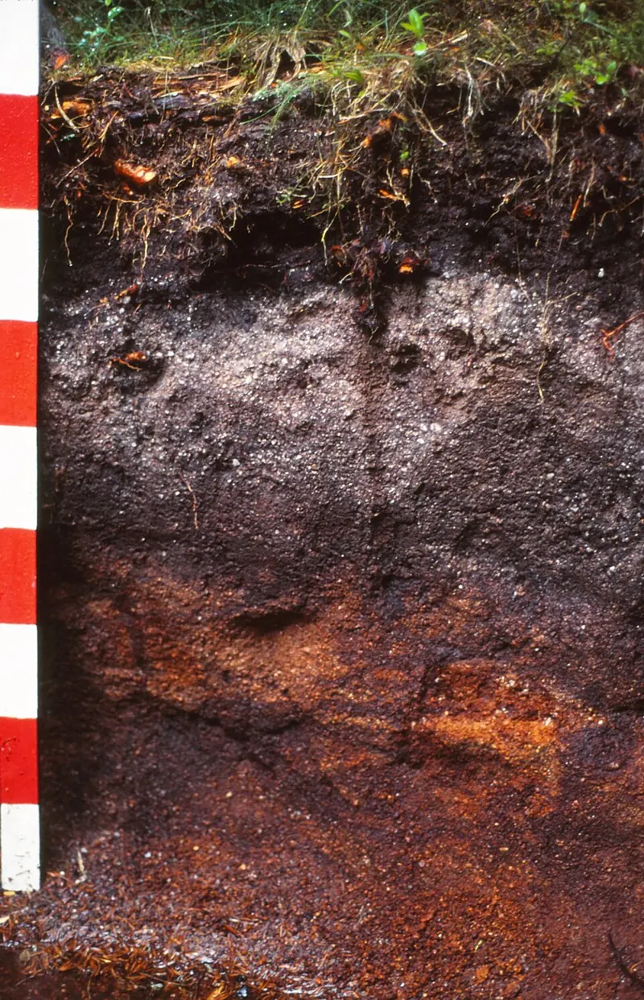
An iron-humus podzol: a pale, leached E horizon sits above reddish-brown B horizons.Photo: U. Burkhardt, Wikimedia Commons (CC BY-SA 3.0)
3
Global map of locations and latitudes
The boreal forest circles the Northern Hemisphere between roughly 50° and 70° N. Temperate conifer forests appear farther south, in mountains and along wet coasts.
Boreal forest / taiga
Temperate conifer forest
Other land
Latitude lines (dashed blue: Arctic Circle)
Left: world map (Winkel Tripel projection). Right: the same forests seen from above the North Pole. Forest areas are the “Boreal Forests/Taiga” and “Temperate Conifer Forests” biomes of the RESOLVE Ecoregions 2017 dataset (Dinerstein et al. 2017, CC BY 4.0); land, lakes and coastlines from Natural Earth.7,16,17 Maps drawn for this site from those data.
How big is it?
Measured on an equal-area projection, the RESOLVE “Boreal Forests/Taiga” biome covers about 15.4 million km² and the “Temperate Conifer Forests” biome about 3.8 million km² (our calculation from the dataset; the boreal figure includes lakes, wetlands and open woodland within the forest zone).16 Canada alone holds 28% of the world’s boreal zone, 552 million hectares, including 270 million hectares of boreal forest.18 Most of the rest lies in Russia, especially Siberia, with smaller areas in Alaska and Scandinavia.1
Major regions, representative countries and latitudesLatitude ranges are the north–south extent of the named RESOLVE ecoregions, rounded; forests are patchier near their edges.16
Region
Countries
Approx. latitude
Forest type and setting
Interior Alaska & Yukon
United States, Canada
60°–69° N
Boreal lowland taiga; black and white spruce
Canadian Shield & eastern Canada
Canada
47°–67° N
Boreal forest and taiga on glacially scoured rock, lakes and bogs
Scandinavia & northwest Russia
Norway, Sweden, Finland, Russia
56°–70° N
Boreal forest (Scandinavian and Russian taiga)
Siberia
Russia
51°–71° N
West, East and Northeast Siberian taiga; larch forests in the far east
Pacific Northwest coast
United States, Canada
42°–61° N
Temperate coniferous rainforest (oceanic climate)
Rocky Mountains
United States, Canada
35°–55° N
Montane and subalpine conifer forest (elevation)
Sierra Nevada
United States
35°–40° N
Montane conifer forest (elevation)
Alps
France, Switzerland, Italy, Austria, Germany
44°–48° N
Subalpine conifer and mixed forest (elevation)
Himalaya
India, Nepal, Bhutan, China, Pakistan
27°–36° N
Subalpine conifer forest at high elevation
Japan
Japan
35°–46° N
Montane and alpine conifer forest (Honshu, Hokkaido)
Southeastern U.S. pinelands
United States
30°–35° N
Warm-temperate pine forest (“Piney Woods”)
Why the forest grows where it does
The northern edge is set by summer warmth. Trees need enough summer heat to grow and ripen seeds. Where the warmest month averages below about 10 °C, Köppen’s climate scheme switches from “cold” (D) to “polar” (E) climates, and tundra replaces forest.2
The southern edge is set by competition. Farther south, growing seasons lengthen to 140–200 days, and broadleaf temperate forest takes over in moist regions.1 Conifers persist there mainly where conditions are harsh in other ways, on cold mountaintops, sandy soils or fire-prone sites.
Why only the Northern Hemisphere? Look at the map: between 50° and 70° S there is almost no land, only the tip of South America and the Antarctic Peninsula. The Southern Ocean occupies the latitudes where a boreal forest would otherwise grow.
Mountains and coasts. Because temperature falls with elevation, subalpine conifer forests grow at high altitude in the Rockies, Alps and Himalaya. Along the Pacific coast of North America, mild, extremely wet ocean air produces temperate rainforest dominated by conifers (compare the Quillayute climatogram in section 1).
Siberian taiga in autumn, when the deciduous larches turn gold.Photo: Elkwiki, Wikimedia Commons (CC BY-SA 3.0)Giant conifers in the Hoh Rain Forest, Olympic National Park, Washington.Photo: pallavi_damera, Flickr (CC BY 2.0)
4
Characteristic plant and animal species
Six trees and seven animals, each explained the same way: the environmental challenge, the adaptation, how it works biologically, why it helps in this forest, and what it means for survival and reproduction.
An adaptation is an inherited trait that improves an organism’s chances of surviving and reproducing in its environment. In the boreal forest, the environment sets a short list of hard problems (cold, snow, a brief growing season, poor soil and fire) and the species below have solved them in different ways. Read each profile as a chain of cause and effect:
Environmental challenge the problem the environment creates
Adaptation the inherited trait
How it works the biology behind it
Why it helps here the link to this ecosystem
Survival & reproduction the evolutionary payoff
4A Trees: built for cold, snow, drought and poor soil
Before looking at individual trees, it helps to know the “toolkit” that most boreal conifers share. Winter in the boreal forest is a drought as well as a cold spell: when the soil is frozen, roots cannot replace water that leaves through the leaves. Broadleaf trees solve this by dropping their leaves in fall; most conifers solve it with leaves that lose very little water.13
Needle-shaped leaves
A thin needle has far less surface area than a broad leaf of the same volume, so it exposes less surface to drying winter wind and holds less snow.
Waxy cuticle and sunken stomata
Needles are coated in a waxy layer that slows water loss, and the pores (stomata) used for gas exchange sit recessed in chambers that shelter them from wind.13
Evergreen foliage
Keeping needles lets conifers photosynthesize whenever conditions allow, start immediately in spring and continue into autumn, and avoid spending scarce soil nutrients on a new set of leaves every year.13
Conical shape, flexible branches
The classic “Christmas tree” shape with a single leader sheds snow and minimizes broken branches, and long fiber cells make conifer branches flexible enough to bend under heavy loads.13
Freeze-proof plumbing
Conifer wood is made of very narrow water-conducting cells (tracheids) that make freeze-thaw air bubbles less likely, and valve-like structures (tori) seal off any cell that does fill with air.13
Cold hardening
In autumn, cells load up on sugars and protective proteins called dehydrins and remodel their membranes. Ice is then allowed to form only outside the cells, which dehydrate safely instead of being pierced by ice crystals.5
How a conifer is built for winter: a needle in cross-section (left) and the snow-shedding crown shape (right). Schematic, not to scale; based on the descriptions in Saupe (CSB/SJU) and Strimbeck et al. (2015).13,5
Adaptation at a glance: trees● documented and discussed in the profile below; ◐ partly true or a general conifer trait. A blank cell means the trait is not notable for that species
Species
Keeps needles all winter
Survives extreme cold (lab tested)
Snow-shedding crown
Fire-adapted cones
Shade tolerant
Shallow roots
Wet / peat soils
Clones by layering
Black sprucePicea mariana
below −80 °C
semi-serotinous
White sprucePicea glauca
below −80 °C
+ sinker roots
Balsam firAbies balsamea
liquid N₂ test
Lodgepole pinePinus contorta
serotinous
intolerant
Eastern hemlockTsuga canadensis
drooping leader
extreme
TamarackLarix laricina
deciduous
liquid N₂ test
intolerant
Cold-tolerance results from laboratory freezing tests compiled by Strimbeck et al. (2015); “liquid N₂” means tissues survived immersion in liquid nitrogen (−196 °C) after slow pre-freezing.5
Black spruce on a peat bog (tourbière) in Témiscamingue, Québec.Photo: Louis Imbeau, iNaturalist (CC BY)
Black spruce
Picea mariana
Role
Primary producer; bog and permafrost specialist
Range
Across boreal North America
Habitat
Poorly drained bogs and lowlands, often over permafrost; also dry uplands
Cones
The smallest spruce cones, 1.5–3.2 cm long
Ecological role
Black spruce dominates most spruce–fir ecosystems of boreal North America and is most common on poorly drained, cold sites underlain by permafrost. It thrives on nutrient-poor soils where few other trees can grow, although its stands are the least productive of the boreal forest types. Most of its regeneration happens after fire.9
Semi-serotinous cones: a seed bank in the treetops Reproductive adaptation
Environmental challenge
Boreal fires usually kill black spruce outright. Even mature trees have thin bark and shallow roots, and stand mortality is often close to 100%.9
Adaptation
“Semi-serotinous” cones that stay on the tree for several years, holding seed in reserve.9
How it works
The cones cluster near the top of the crown, where they are least likely to be destroyed. After a fire kills the tree, the heat-dried cones open and release large quantities of seed soon after the fire, and dispersal continues for the next few years.9
Why it helps here
Fire burns away the moss and lichen layer, exposing mineral soil and thin organic soil, the best seedbeds for black spruce seedlings.9 The seeds arrive exactly when and where conditions are best.
Survival & reproduction
Individual trees die, but the population replaces itself on the same ground. In this way fire becomes part of black spruce’s life cycle rather than the end of it.
Layering: cloning in the moss Reproductive adaptation
Environmental challenge
In cold bogs, swamps and at the treeline, the growing season is short and seedlings often fail to establish.
Adaptation
Layering, lower branches that take root and grow into new, genetically identical trees.9
How it works
As fast-growing mosses or litter bury the lowest branches, the buried branch sends out roots. Eventually it can stand as an independent tree.9
Why it helps here
Layering is especially common on organic soils and in swamps, bogs and arctic and mountain treelines, exactly the places where reproduction by seed is most difficult.9
Survival & reproduction
The parent tree supplies water and sugar to the new shoot until it is established, so the clone survives where a seedling would not.
Shallow roots above frozen and waterlogged soil Structural adaptation
Environmental challenge
Permafrost and saturated peat leave only a thin layer of thawed, oxygenated soil at the surface.
Adaptation
A shallow root system, with most roots in the upper 20 cm of organic soil, plus small adventitious roots.9
How it works
Roots spread sideways through the thin active layer instead of growing down into ice or into permanently waterlogged soil where oxygen runs out.
Why it helps here
Roots need oxygen to respire; the only oxygen-rich, unfrozen soil on these sites is at the very top.
Survival & reproduction
Black spruce can dominate cold, wet sites that other trees cannot use, at the cost of being easily killed by fire.
Exam tip: In laboratory tests, fully cold-hardened black spruce tissues survived freezing below −80 °C.5
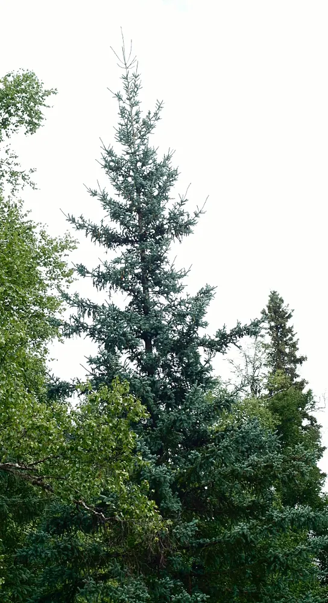
White spruce in south-central Alaska.Photo: psweet, iNaturalist (CC BY-SA)
White spruce
Picea glauca
Role
Primary producer; upland and river-valley dominant
Range
Boreal North America, to the northern treeline
Habitat
Riparian, upland and treeline sites; grows best on well-drained soil
Lifespan
Commonly 100–250 years; older than 300 at treeline
Ecological role
White spruce is a major canopy tree of better-drained boreal sites and river valleys.15 Its seed crops are the main food of the American red squirrel, which hoards the cones (see red squirrel).19
Freeze tolerance: letting ice form in the right place Physiological adaptation
Environmental challenge
Unlike low plants buried under snow, evergreen spruce, fir and pine stand exposed above the snowpack through the coldest weather.5
Adaptation
Seasonal cold acclimation. In laboratory tests, fully hardened white spruce needles, buds and wood survived temperatures below −80 °C.5
How it works
In autumn, cells accumulate sugars and other protective solutes, change the fats in their membranes, and produce proteins called dehydrins. When temperatures drop, ice forms only outside the cells. Water is drawn out of the cells toward that ice, so the cell contents become concentrated and thick enough to resist forming ice crystals of their own.5
Why it helps here
Ice crystals inside a cell rupture its membranes and kill it. By controlling where ice forms, the tree turns a lethal freezing problem into a survivable drying problem.5
Survival & reproduction
Needles and buds come through winter alive and ready to photosynthesize as soon as spring arrives.
Mast seeding: flooding the market Reproductive adaptation
Environmental challenge
Red squirrels and other seed predators can eat or hoard much of a spruce’s seed.
Adaptation
Seed production is highly variable, with huge “mast” crops about every 10–12 years.15
How it works
Trees across a whole region produce few cones for several years and then a massive crop at the same time. In a Yukon study, most red squirrels hoarded less than 10% of the cones on their territories in a mast year, the predators were simply overwhelmed.19
Why it helps here
Mast seeding is a classic example of predator satiation: producing more seed than predators can possibly consume.19
Survival & reproduction
Many seeds escape and land on good seedbeds such as mineral soil and rotting logs, where new trees establish.15
Flexible rooting Structural adaptation
Environmental challenge
Warmth and nutrients are concentrated at the surface, but a tall tree needs anchoring.
Adaptation
Mostly shallow roots in the upper 15–30 cm of soil, plus taproots and “sinker” roots that can reach 3 m where soil allows.15
How it works
Lateral roots exploit the organic mat and the boundary between organic and mineral soil, while deeper roots grow down where drainage permits.15
Why it helps here
On well-drained uplands and riverbanks, the combination supplies nutrients from the surface and stability from below.
Survival & reproduction
Long-lived trees produce many mast crops over a lifetime of one to two and a half centuries.15
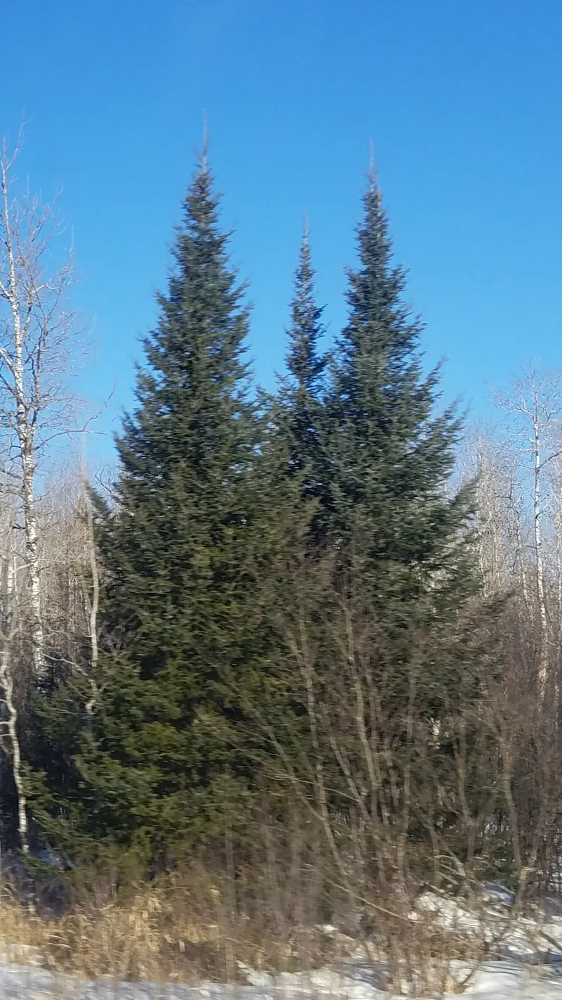
Balsam firs showing the narrow, spire-topped crowns typical of the species, Florence County, Wisconsin.Photo: Eric Schmidt, iNaturalist (CC BY)
Balsam fir
Abies balsamea
Role
Primary producer; shade-tolerant understory and canopy tree
Range
Southern boreal and northeastern North America
Size
12–27 m tall; rarely older than about 200 years
Bark
Smooth, gray, with raised resin blisters
Ecological role
Balsam fir is a major winter food of moose, especially when snow is deep, and the main host of the spruce budworm, whose cyclical outbreaks have killed firs over vast areas. Budworm-attacked stands in turn attract many insect-eating birds such as warblers and woodpeckers.20
A narrow, spire-topped crown Structural adaptation
Environmental challenge
Months of heavy, wet and wind-packed snow pile onto every branch.
Adaptation
A dense, narrowly pyramidal crown that ends in a slender, spirelike top.20
How it works
Short upper branches and longer lower branches form a cone with a single central leader, so snow slides off the sloping outline instead of piling up. Long fiber cells in conifer wood let branches bend under weight rather than snap.13
Why it helps here
A broad, flat-topped crown would collect a heavy load and break; a cone sheds it. Fewer broken branches means less lost leaf area and fewer wounds.13
Survival & reproduction
The tree keeps its photosynthetic needles and its leader through winter, so it keeps growing taller year after year.
Shade tolerance: waiting in the dark Physiological adaptation
Environmental challenge
Little light reaches the floor of a dense conifer forest.1
Adaptation
Very shade-tolerant seedlings that can survive many years of suppression under the canopy; seedlings also quickly develop roots that reach through shallow litter.20
How it works
A suppressed seedling grows extremely slowly, spending little energy, and survives on the dim light that filters through. When a canopy tree falls, the waiting seedling responds to the sudden light by growing quickly.
Why it helps here
Windthrow and budworm outbreaks regularly open gaps; whoever is already waiting in the understory wins the race for the light.
Survival & reproduction
Balsam fir can also spread by layering in swamps and mossy areas.20 Together, these traits let it hold its place in the forest for generations.
Straight-trunked lodgepole pines near Lake Louise, Alberta.Photo: Caleb Catto, iNaturalist (CC BY)
Lodgepole pine
Pinus contorta var. latifolia
Role
Primary producer; fire-dependent pioneer
Range
Rocky Mountains and western boreal forest (Alberta, British Columbia, Montana, Colorado, Idaho)
Habitat
Fire-prone montane and boreal forests
Light needs
Shade intolerant
Ecological role
Lodgepole pine is a pioneer that forms dense, even-aged stands after fire; in many places it is later replaced by more shade-tolerant trees over 100–200 years. It is also the main host of the mountain pine beetle.21
Serotinous cones sealed with resin Reproductive adaptation
Environmental challenge
Fires kill lodgepole pine easily: its thin bark lets heat damage the living layer (cambium) beneath.21
Adaptation
Serotinous cones that stay sealed on the tree for years, storing seed in a “canopy seed bank.”21
How it works
The cone scales are glued shut by resin. Temperatures of about 45–50 °C (113–120 °F) (the kind that accompany a moderate to severe fire) melt the resin, the scales open, and seeds fall onto the burned ground, mostly within about 60 m of the parent tree.21
Why it helps here
Fire removes the shading canopy and the litter and exposes mineral soil, creating the open, sunny seedbed that this shade-intolerant pine needs.21
Survival & reproduction
A single fire can trigger a dense new stand. Not all stands are equally serotinous, which spreads the risk: some seed is released between fires as well.21
Serotiny: resin seals the cone until fire heat (about 45–50 °C) melts it. Schematic, not to scale.21
A sun-loving pioneer strategy Life-history adaptation
Environmental challenge
Without disturbance, shade-tolerant trees eventually take over and shade out young pines.21
Adaptation
Fast establishment in the open conditions left by fire, producing new age classes after burns.21
How it works
Because seed is released all at once onto bare ground, seedlings start together and grow upward together in full sun.
Why it helps here
In fire-prone forests, the species that colonizes burned ground first can dominate the site for a century or more.21
Survival & reproduction
Lodgepole pine is “reset” by fire rather than replaced by it.
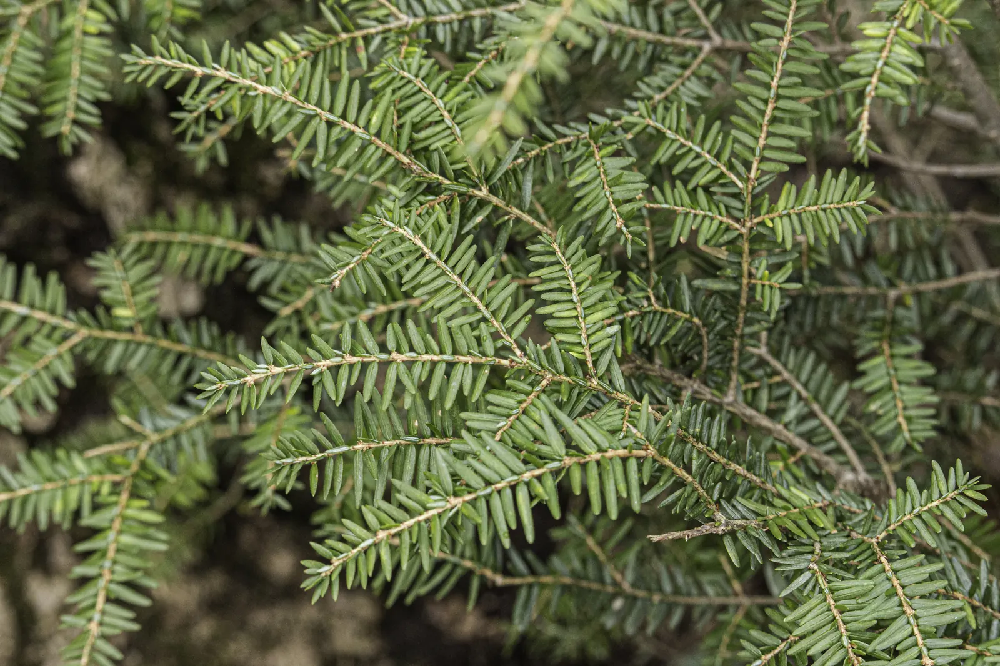
Eastern hemlock's short, flat needles grow in two rows along each twig.Photo: no rights reserved, iNaturalist (CC0 1.0)
Flat, about 1/2 inch, two white stomatal lines beneath
Ecological role
Eastern hemlock is a dominant tree of the temperate conifer and mixed forests at the southern edge of the boreal zone. Its dense evergreen canopy casts deep shade. It is now threatened by an invasive insect, the hemlock woolly adelgid (see 5.5).22,23
Extreme shade tolerance Physiological adaptation
Environmental challenge
Seedlings on the floor of a dense hemlock or mixed forest receive only a tiny fraction of full sunlight.
Adaptation
Eastern hemlock is very shade tolerant: seedlings survive in as little as 5% of full light, and trees can survive several hundred years of suppression.22
How it works
Tree rings show repeated cycles of suppression and sudden growth “releases” when neighbors die and let in light.22
Why it helps here
In a forest where most light is captured by the canopy, the ability to wait centuries for an opening is a powerful competitive advantage.
Survival & reproduction
Trees begin producing seed at 20–30 years of age, and hemlocks older than 450 years still produce large seed crops.22
Flat, two-ranked needles and a drooping leader Structural adaptation
Environmental challenge
Dim light favors leaves that intercept as much light as possible, and winter snow must still be shed.
Adaptation
Flat needles about 1/2 inch long arranged mostly in two rows (“two-ranked”), shiny dark green above with two lines of white stomata below, on a dense conical crown with a drooping terminal shoot.24
How it works
Spreading flat needles in a single plane turns each twig into a flat spray that faces the sky, while the pores sit on the shaded underside. The flexible, nodding leader bends under snow instead of snapping.
Why it helps here
Flat sprays capture scarce light efficiently in deep shade; a conical crown and flexible tip limit snow damage.13
Survival & reproduction
Steady photosynthesis in the shade sustains extraordinarily long lives and centuries of seed production.22
A wide net of near-surface roots captures water and nutrients as they are released from decomposing litter.
Why it helps here
Rocky or shallow soils are common where hemlock grows; spreading sideways reaches more soil volume.
Survival & reproduction
Efficient resource capture supports slow but steady growth for centuries.
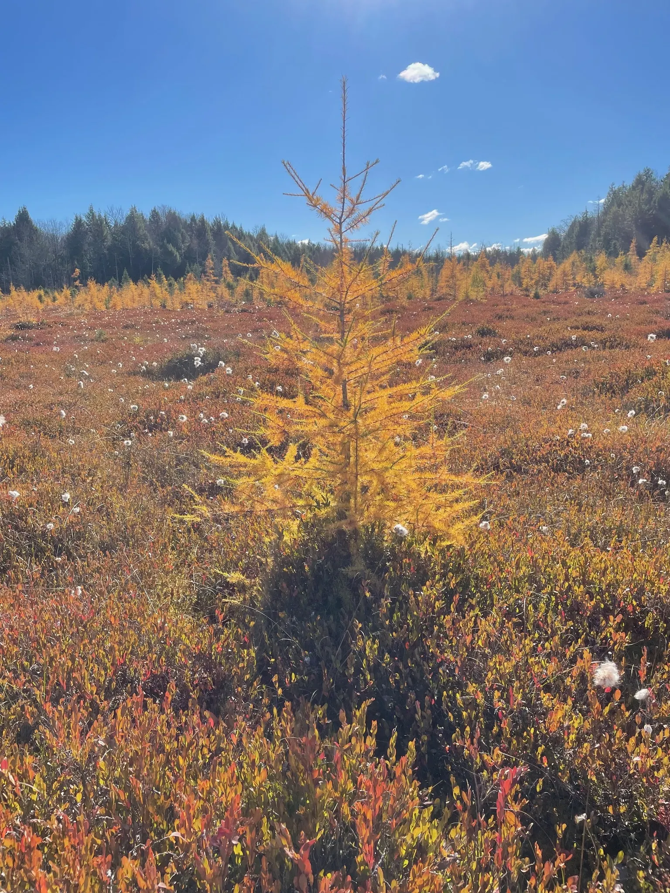
A tamarack turning gold in autumn before it drops its needles, Vermont.Photo: Tom Scavo, iNaturalist (CC BY)
Tamarack (eastern larch)
Larix laricina
Role
Primary producer; deciduous conifer of bogs and wet lowlands
Range
Boreal North America, Alaska to Labrador
Habitat
Bogs and wet lowlands, often with black spruce; permafrost in Alaska
Leaves
Soft needles that turn gold and fall each autumn
Ecological role
Tamarack is one of the ten larch species, deciduous conifers of cool northern regions. It is usually found with black spruce, and in Alaska the two may share wet lowlands underlain by shallow permafrost.25
A conifer that drops its needles Physiological adaptation
Environmental challenge
Some of the coldest sites in North America, where winter needles would face freezing, drying wind and ice.
Adaptation
Deciduous needles. British Columbia’s tree-species guide notes that tamarack is adapted to a very cold, Siberian-like boreal climate “partly by way of being deciduous.”26,27
How it works
Tamarack grows a new set of thin needles each spring, uses them through the summer and sheds them in fall, leaving only dormant buds and woody tissue to face winter. Its tissues are extremely cold-hardy: in laboratory tests they survived immersion in liquid nitrogen.5 Studies of a related western larch found that its needles photosynthesize faster per gram than those of neighboring evergreen conifers on drier sites.28
Why it helps here
With no leaves exposed in winter, there is nothing to lose water from or be damaged by ice, so the tree does not need the thick, long-lived needles of a spruce.
Survival & reproduction
Fast summer photosynthesis with inexpensive needles lets tamarack grow quickly in the brief season and survive the harshest winters.
Tolerance of flooding and frozen ground Physiological adaptation
Environmental challenge
Bog water tables rise and fall, and some sites have permafrost and late-spring or early-fall frosts.
Adaptation
Tamarack tolerates flooding, a high or strongly fluctuating water table, permafrost soils and out-of-season frosts.26
How it works
A shallow, compact root system develops in the upper 30 cm of soil, staying in the zone that thaws and drains first.26
Why it helps here
Few trees can live with their roots in saturated, cold peat; tamarack and black spruce share these sites with little competition.25
Survival & reproduction
Open bogs become available habitat for a fast-growing tree that needs full light.
A sun-demanding pioneer Life-history adaptation
Environmental challenge
Competition for light in closed forest.
Adaptation
Very shade-intolerant and relatively fast-growing, reaching up to 60 cm of growth a year on productive sites.26
How it works
Rather than tolerating shade, tamarack outgrows competitors on open, wet ground and keeps its crown in full sun.26
Why it helps here
Open bogs and burned lowlands offer full sunlight but punishing soils, conditions tamarack tolerates better than most trees.
Survival & reproduction
It quickly occupies new openings before shade-tolerant trees arrive.
Common misconception: “Conifer” means cone-bearing, not evergreen. Tamarack is a conifer that is not evergreen, its golden needles fall every autumn.25
4B Animals: three ways to survive winter
Every boreal animal must get through a winter of deep snow, short days and scarce food. There are three broad strategies:
Resist: stay active
Grow thicker fur, change color, travel on top of snow, hunt cooperatively or live on stored food. Moose (snowshoe hares) lynx, wolves, boreal owls and red squirrels all stay active.
Avoid: go dormant
Shut down until spring. Of the animals on this page, only the brown bear hibernates.29
Leave: migrate
Many birds escape the boreal winter entirely. None of the seven animals below is a true seasonal migrant, but some move widely: lynx abandon areas when hares crash, and wolf packs travel over vast distances.30,31
Mammals that stay active share some general winter equipment. In fall they grow extra underfur (short, thick, wavy hairs that trap insulating air beneath longer guard hairs) and muscles in the skin can fluff the fur to trap even more air. Blood vessels in the legs are arranged for countercurrent heat exchange, so warm blood flowing out to the feet heats the cold blood returning to the body.32 The profiles below focus on the traits that are special to each species.
Adaptation at a glance: animals● key adaptation discussed in the profile; ◐ partly true. A blank cell means it does not apply
Species
Active all winter
Hibernates
Seasonal coat color change
Built for deep snow
Stores food
Specialized feeding / hunting
Travels widely
MooseAlces alces
long legs
browse, aquatic plants
Snowshoe hareLepus americanus
brown ↔ white
big hind feet
twigs, bark
Canada lynxLynx canadensis
snowshoe paws
hare specialist
when hares crash
Gray wolfCanis lupus
pack hunting
Brown bearUrsus arctos
as body fat
omnivore
Boreal owlAegolius funereus
caches prey
hunts by ear
Red squirrelTamiasciurus hudsonicus
cone middens
seed predator
A bull moose in New Hampshire. Legs this long carry the body above deep snow and shallow water.Photo: Alan Kneidel, iNaturalist (CC BY)
Moose
Alces alces
Role
Primary consumer; large browsing herbivore
Size
Bulls 900–1,400 lb; cows 700–1,100 lb; 5–6.5 ft at the shoulder
Habitat
Forest near lakes, marshes and willow thickets
Predators
Gray wolves and bears
Ecological role
The moose is the largest member of the deer family and a major browser of willow, shrubs and young trees; it is the main prey of wolves in much of the north.33,30
Extremely long legs Structural adaptation
Environmental challenge
Deep snow buries food and makes walking exhausting; in summer, much good food grows underwater.
Adaptation
Very long legs that hold the body 5 to 6½ feet above the ground.33
How it works
Moose have special joints that let them swing their legs up and over the snow instead of plowing through it, as elk must.32 The same legs let them wade into lakes to pull plants off the bottom and paw through deep snow to reach food.33
Why it helps here
In deep snow, moose gather in willow marshes and trample networks of trails called “yards,” saving energy while they feed.33
Survival & reproduction
Less energy spent moving means more fat reserves left for late winter and for producing a calf in spring.
Built for cold, stressed by heat Physiological adaptation
Environmental challenge
Winter temperatures drop far below −20 °C while food quality falls.
Adaptation
Exceptional cold tolerance and a lowered winter metabolism. In experiments, moose raised their hair (piloerection) at −25 to −30 °C but did not increase their metabolic rate, and their resting energy use in winter was less than half of that in spring and early summer.34
How it works
A huge body has little surface area for its volume, so it loses heat slowly; a dark coat traps an insulating layer of air, and raising the hairs thickens that layer further.33,32
Why it helps here
The flip side is overheating: moose breathe faster when winter air rises above about −5 °C and begin open-mouthed panting at 20 °C in summer.34 Their design suits a cold climate, and explains why warming is a concern for them.
Survival & reproduction
Spending little energy to stay warm lets moose survive winters on low-quality twig browse.
Switching menus with the seasons Behavioral adaptation
Environmental challenge
Leaves and aquatic plants vanish in winter; what remains is twigs and needles, and moose run short of sodium from about September to May.35
Adaptation
A flexible diet: in summer, grasses, forbs, underwater vegetation, shrubs and leaves; in winter, woody browse such as willow and balsam fir.33,20
How it works
Balsam fir twigs weigh 8–13 times more than deciduous twigs of similar length, so a moose can gather more food with less time and energy when snow is deep.20 Researchers studying Isle Royale moose proposed that they store sodium by replacing it with potassium in their saliva and rumen fluids during the months of shortage.35
Why it helps here
Feeding efficiently on whatever the season offers makes the most of a short growing season.
Survival & reproduction
Well-fed cows are more likely to raise calves.
Snowshoe hare in its white winter coat, Anchorage, Alaska.Photo: Matt Muir, iNaturalist (CC BY)
Snowshoe hare
Lepus americanus
Role
Primary consumer; the forest’s central prey species
Size
1.4–1.8 kg (3–4 lb); 46–51 cm long
Diet
Summer: grasses, buds, leaves. Winter: spruce twigs and needles, bark, aspen and willow buds
Young
2–3 litters a year
Ecological role
Snowshoe hares convert twigs and bark into food for nearly every predator in the forest, and their famous ten-year population cycle (first noticed in Hudson’s Bay Company fur-trade records) ripples through the whole food web.30,36
A coat that changes color with the seasons Physiological adaptation
Environmental challenge
Lynx, owls and other predators hunt by sight, and the background switches from brown forest floor to white snow and back each year.
Adaptation
Two molts a year: a yellowish- to grayish-brown summer coat is replaced by a white winter coat, whose hairs stay dusky at the base over gray underfur.30
How it works
Across animals that change color seasonally, the main cue that times the molt is photoperiod (day length) acting through hormone (neuroendocrine) signals that control hair growth.37 As autumn days shorten, follicles grow new hairs without dark pigment; lengthening days in spring trigger brown hairs again. White hairs contain air instead of pigment, which may also improve insulation.32
Why it helps here
The main function of the seasonal color change is camouflage against snow.37 A hare that matches its background is harder for visual predators to find.
Survival & reproduction
Hares that survive winter breed from mid-May through August.30 But because day length, not snow, sets the timing, a warming climate creates mismatch: hares could not shift when their color change starts, and models forecast four to eight times more days of white hares on brown ground by 2100.38
Why day length matters: the molt is timed by photoperiod, so when snow arrives late or melts early, a white hare is left on brown ground. Schematic, not to scale; based on Zimova et al. (2018) and Mills et al. (2013).37,38
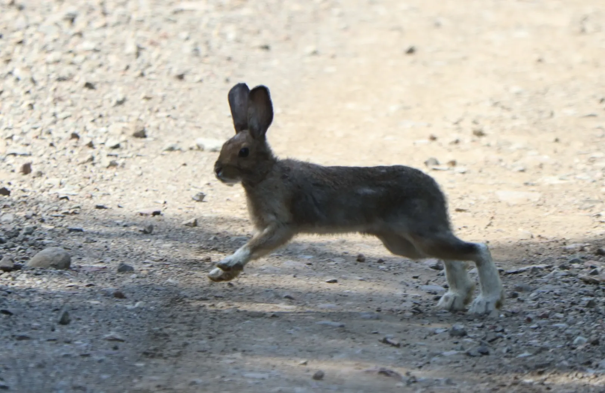
The same species in its brown summer coat, mid-stride; note the long hind feet. British Columbia.Photo: no rights reserved, iNaturalist (CC0 1.0)
The “snowshoe” hind feet Structural adaptation
Environmental challenge
Fleeing a predator through soft, deep snow.
Adaptation
Large, heavily furred hind feet, hence the name “snowshoe.”30
How it works
Pressure equals weight divided by area. Spreading the hare’s weight over large, furry feet lowers the pressure on the snow, so the hare sinks less.32
Why it helps here
On soft snow a hare can bound away from predators that sink; in winter it also follows a network of packed trails, often along its summer pathways.30
Survival & reproduction
Escaping predators through winter is what lets a hare live to breed in spring.
Fast breeding Life-history adaptation
Environmental challenge
Heavy predation and periodic population crashes.
Adaptation
Hares breed at about one year old and have two to three litters a year; females mate again right after giving birth.30
How it works
Pregnancy lasts only 36–37 days, and the young (leverets) are born fully furred with eyes open, able to walk as soon as their fur is dry and eating plants within two weeks.30
Why it helps here
Precocial young need little care, so a mother can raise several litters within one short summer.
Survival & reproduction
Populations can rebuild quickly after a crash, one reason the hare cycle repeats.
Canada lynx in snow, Manitoba. Its broad, furry paws work like snowshoes.Photo: Owen Strickland, iNaturalist (CC BY)
Canada lynx
Lynx canadensis
Role
Secondary consumer; specialist predator of hares
Look
Short tail, long legs, furry feet, long black ear tufts
Main prey
Snowshoe hare; also grouse, rodents
Young
Usually 2–4 kittens
Ecological role
The lynx is a specialist predator of snowshoe hares. Its numbers rise and fall with the hare cycle, lagging one to two years behind.30,36
Snowshoe paws Structural adaptation
Environmental challenge
Chasing hares across deep, soft snow.
Adaptation
Large, broad feet that “function as snowshoes,” with extra fur growing between the toes in winter.30,32
How it works
Foot-load is body mass divided by foot area. Lynx and coyotes are similar in size, but in a Yukon study coyotes had 4.1 to 8.8 times the foot-load of lynx and sank deeper into the snow.39
Why it helps here
Where snow is deep and soft, the lynx can stay on top while competing predators flounder or must stick to packed trails.39
Survival & reproduction
Hunting success in winter determines whether a lynx survives and whether females produce kittens.
Foot-load, the weight each square centimeter of foot must carry. With similar body mass, a coyote’s foot-load was 4.1–8.8 times a lynx’s. Schematic; ratio from Murray and Boutin (1991).39
A life tied to the hare cycle Life-history adaptation
Environmental challenge
Snowshoe hares go through an 8–11-year cycle of abundance and scarcity.30
Adaptation
Reproduction that tracks the food supply, plus the ability to switch prey or move away.
How it works
When hares are plentiful, a high percentage of females one year or older produce kittens, and most survive. When hares are scarce, very few yearlings breed and very few kittens survive to winter. Lynx then turn to grouse and rodents (occasionally even caribou, Dall sheep or foxes) or leave the area.30
Why it helps here
Matching the number of young to the food available avoids wasting energy on kittens that cannot be fed.
Survival & reproduction
Kittens stay with their mother until late winter, learning the hunting skills they need to survive.30
Ecological relationship
The hare–lynx cycle
In 1831, a Hudson’s Bay Company post manager in northern Ontario reported that local Ojibway people were starving because “rabbits” (snowshoe hares) had become scarce. Such shortages recurred roughly every ten years, and when biologists plotted the company’s fur-trade records in the early 1900s, lynx numbers rose and fell in step with hares.36 Long-term studies in the Yukon concluded that the cycle is driven by the interaction of hares with both their food and their predators.30,36
Schematic of a predator–prey cycle: lynx numbers peak one to two years after hares. Illustrative curves, not data.30
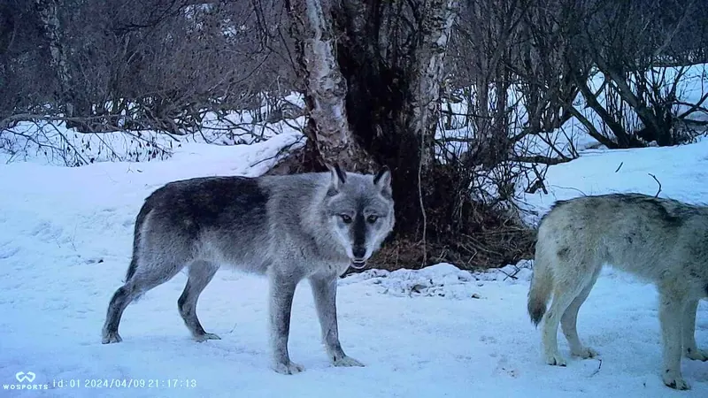
Gray wolves travelling through snowy forest in south-central Alaska.Photo: Matt Muir, iNaturalist (CC BY)
Gray wolf
Canis lupus
Role
Tertiary consumer; apex predator
Size
Interior Alaska males 38–52 kg (85–115 lb)
Social unit
Packs averaging 6–7; sometimes 20–30
Main prey
Moose and caribou; also sheep, hares, beaver
Ecological role
Wolves are the top predators of large boreal herbivores. In most of mainland Alaska, moose and/or caribou are their primary food, supplemented by Dall sheep, squirrels (snowshoe hares) beaver and occasionally birds and fish; they also scavenge.30
Cooperative pack hunting Behavioral adaptation
Environmental challenge
The main prey, the moose, can weigh ten times as much as a wolf and is dangerous to attack.33,30
Adaptation
Living and hunting in packs, usually a breeding pair and their offspring, that defend a shared territory.30
How it works
Working together, a pack can bring down prey no single wolf could. In winter a pack may kill a deer or moose every few days.30
Why it helps here
Large herbivores are the most abundant food in the boreal winter, when small prey hide under snow.
Survival & reproduction
Shared kills feed the pups, typically one litter of about seven a year per pack.30
Testing herds for the weakest animal Behavioral adaptation
Environmental challenge
Healthy adult moose can outrun or fight off wolves.
Adaptation
Opportunistic hunting focused on young, old or weakened animals.30
How it works
Wolves select the prey that is easiest to catch. When snow is unusually deep, even prime-age animals become vulnerable.30
Why it helps here
Deep snow slows and exhausts large hoofed animals, shifting the odds toward the pack.30
Survival & reproduction
Less risky hunts mean fewer injuries for the hunters, and predation that removes weak animals from prey herds.
Feast, famine and long-distance travel Physiological and behavioral adaptation
Environmental challenge
Prey is spread thinly across a vast, cold landscape.
Adaptation
Wolves can go several days with almost no food, and packs travel over vast expanses of terrain to hunt.30,31
How it works
A large kill is eaten quickly, then the pack lives on stored energy while it searches. A thick winter underfur beneath long guard hairs keeps them warm on the move.32
Why it helps here
In a land of scattered prey, the ability to cover ground and endure hunger matters more than speed.
Survival & reproduction
Packs that hold large territories can find enough prey to raise pups year after year.
A brown bear in boreal pine–spruce forest, Kainuu, Finland.Photo: Annika Lindqvist, iNaturalist (CC BY)
Brown bear (grizzly)
Ursus arctos
Role
Omnivore; top predator and scavenger
Range
Boreal and mountain forests of North America, Scandinavia and Russia
Diet
Omnivore: plants, berries, fish, clams, small mammals
Winter
Hibernates 5–6 months; more than 7 in the Arctic
Ecological role
Brown bears are omnivores, eating a mixed diet of plants, berries, fish and small mammals, and they also prey on vulnerable large animals such as moose calves and elk calves.40,33 As apex predators, their condition reflects the health of the ecosystems they live in.41 In Katmai, Alaska, they dig for clams and catch sockeye salmon all summer before entering dens in mid-October to November.42
Hibernation: five to seven months without eating or drinking Physiological adaptation
Environmental challenge
For half the year, the plants, fish and other foods a bear depends on are unavailable under snow and ice.
Adaptation
Hibernation. Brown bears hibernate for five to six months each winter, eating and drinking nothing and producing no urine; Arctic brown bears in Alaska averaged 206 days in their dens, and one stayed 233 days, 64% of the year.29,41
How it works
Activity, heart rate and body temperature start to fall weeks before den entry, and bears go into dens when snow arrives and air temperature reaches about 0 °C; inside, their metabolism is strongly suppressed.43 The body lives on stored fat while recycling the nitrogen in urea back into proteins, which protects muscle and bone from wasting.29
Why it helps here
Sleeping through the foodless season costs far less energy than searching for food in deep snow.
Survival & reproduction
Bears emerge in spring with muscles and bones intact. Females with cubs stay in their dens longer, and pregnant females choose higher, snowier den sites.41
Fattening up before winter Behavioral adaptation
Environmental challenge
A bear must store all the energy for winter during a short summer and fall.
Adaptation
Intense late-season feeding and flexible timing of den entry.
How it works
Bears build large fat stores before denning; grizzlies in Yellowstone spend most of their time feeding, eating up to 30 pounds of food a day to store fat for winter.29,40 When food is plentiful in the fall, Arctic brown bears delay entering their dens to keep feeding.41
Why it helps here
Every extra week of feeding adds fat that must last through a winter that may stretch past seven months.
Survival & reproduction
Fat reserves fuel both survival and, for females, nursing cubs in the den.
Long claws and a digging shoulder Structural adaptation
Environmental challenge
Much of the food in a cold, short-summer forest is buried or seasonal: roots, bulbs, burrowing rodents, clams.
Brown bears use their claws to dig for food, pick fruits and catch prey; the strong shoulder muscles make them efficient diggers.40
Why it helps here
Being able to dig lets a bear switch among roots, bulbs, berries, fish and small mammals as each becomes available.40
Survival & reproduction
A broad, flexible diet helps bears reach the fat reserves they need to survive hibernation.
Common misconception: Not every boreal mammal hibernates. Of the animals profiled here, only the brown bear does; moose, hares, lynx, wolves and red squirrels stay active all winter.
Boreal owl (called Tengmalm's owl in Europe), Bavaria, Germany.Photo: Christoph Moning, iNaturalist (CC BY)
Boreal owl
Aegolius funereus (Tengmalm’s owl in Europe)
Role
Secondary consumer; nocturnal predator of small mammals
Habitat
Spruce, fir, aspen, poplar and birch stands across the boreal forest
Diet
Voles, mice, shrews, squirrels; some birds and insects
Nest
Old woodpecker holes and natural cavities; 4–6 eggs
Ecological role
A small owl that hunts at night, the boreal owl preys on voles and other small mammals and depends on woodpeckers for nest holes.44,45
Lopsided ears for hunting in the dark Structural adaptation
Environmental challenge
Long winter nights, and prey that moves hidden under vegetation and snow.
Adaptation
Asymmetrical ears. The ear openings in the skull are offset: the right one sits about 6.5 mm higher than the left, so a line between them tilts about 12° from horizontal.46
How it works
A sound from below reaches the two ears at slightly different loudness and timing. By comparing the two signals, the owl’s brain calculates not just left-to-right direction but also height, “excellent physical cues to vertical localization of sound.” A large air-filled middle ear also improves detection of the low-frequency rustling made by prey moving through vegetation.46
Why it helps here
Boreal owls sit on a perch listening and dive when they hear something scurrying below; in winter they hunt in spruce–fir stands where uncrusted snow lets them reach prey.45,44
Survival & reproduction
Precise hearing lets the owl catch food in near-total darkness through the long northern winter.
Front view of a boreal owl skull (schematic): the right ear opening is higher than the left, so each ear hears sounds from above and below differently. Measurements from Norberg (1978).46
Caching prey and thawing it Behavioral adaptation
Environmental challenge
Hunting success varies from night to night, and some nights bring nothing.
Adaptation
Food storage: boreal owls sometimes store extra food in cold weather, then thaw it later by sitting on it.45
How it works
Surplus prey is stored and may freeze solid in the cold; the owl later warms it with its own body heat by sitting on it.45
Why it helps here
A long-term study of breeding Tengmalm’s (boreal) owls found that prey caching acts as a buffer against temporary food shortages.47
Survival & reproduction
Stored food helps keep the female and chicks fed during bad hunting spells.
Nesting in tree cavities Reproductive and behavioral adaptation
Environmental challenge
Eggs and chicks must stay warm and hidden from predators such as martens and larger owls.45
Adaptation
Nesting in holes made by woodpeckers or in natural cavities; the male advertises several possible sites and the female chooses.44
How it works
The female lays four to six eggs and does most of the incubation while the male hunts and brings her food; eggs hatch in about 27–28 days.45
Why it helps here
A wooden cavity shelters the nest from wind and cold and is hard for predators to reach.
Survival & reproduction
Young fledge after about 28–36 days.45 Because the owls need old trees with woodpecker holes, they depend on mature forest.
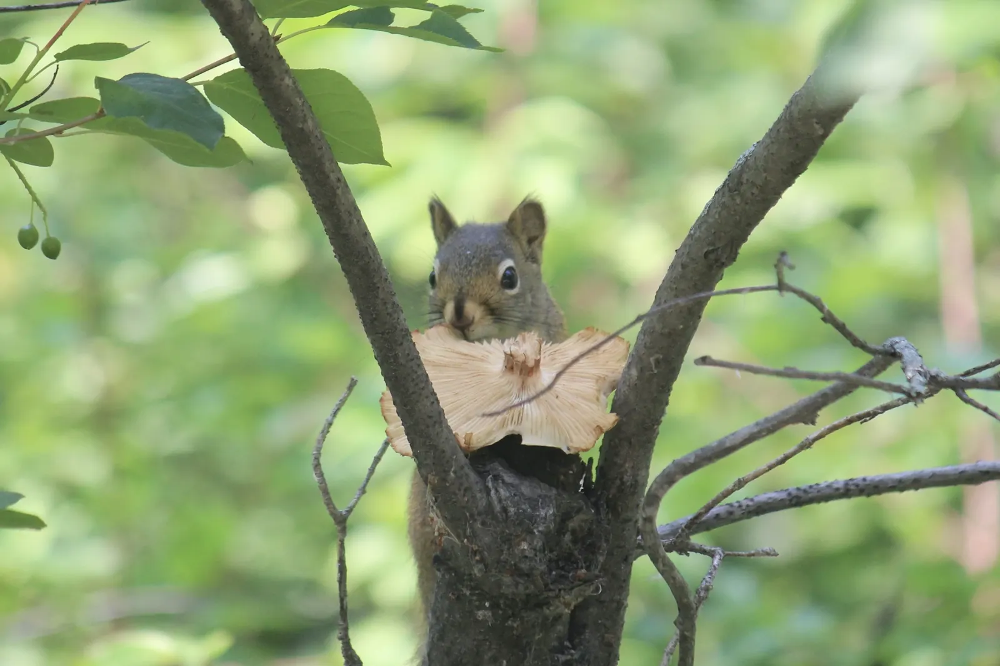
American red squirrel in Parkland County, Alberta.Photo: Quinn, iNaturalist (CC BY-SA)
American red squirrel
Tamiasciurus hudsonicus
Role
Primary consumer; seed predator and food hoarder
Habitat
Conifer forests across boreal North America
Main food
Seeds from white spruce and other conifer cones
Behavior
Territorial; defends a central food store
Ecological role
In many boreal regions, red squirrels are the main vertebrate predator of white spruce seed crops.19 In turn, squirrels are prey for predators such as the boreal owl.44
Larder hoarding in middens Behavioral adaptation
Environmental challenge
Fresh food all but disappears for six months, and cones release their seeds soon after ripening.
Adaptation
Larder hoarding: squirrels cut green, unopened cones in late summer and fall and pack them into a central store called a midden. One squirrel may collect more than 15,000 cones.48
How it works
Cones are buried in the cool, moist midden, which keeps them from drying out and opening; the squirrel later digs them out and drops the inedible cone scales back on the pile.48 By hoarding unopened cones underground, squirrels interrupt the normal sequence of cone opening, seed dispersal and germination.19
Why it helps here
A squirrel that relies on a stored food supply is not limited by how much fat it can carry on its body.19
Survival & reproduction
A large midden can hold enough food for more than one winter, worth defending, since squirrels steal from each other, and bears sometimes raid middens too.48
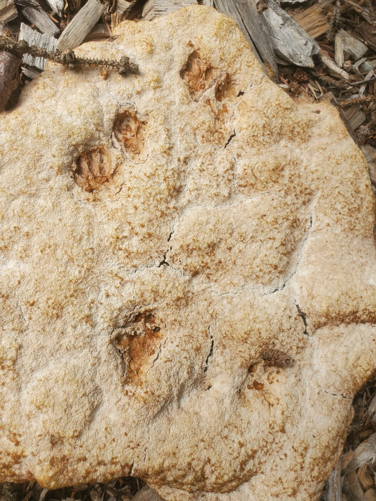
A red squirrel midden: a mound of cone scales left from years of feeding, Edmonton, Alberta.Photo: Bennett Grappone, iNaturalist (CC BY)
Breeding in anticipation of a bumper crop Reproductive adaptation
Environmental challenge
White spruce produces huge seed crops only once every several years (see white spruce).15
Adaptation
Anticipatory reproduction: red squirrels (and Eurasian tree squirrels) increase their reproductive output before a mast year.49
How it works
Females raise more young in the breeding season before the big seed crop is available, so the population is already growing when the food pulse arrives.49
Why it helps here
Most seed predators can only respond after food appears; anticipating the pulse eliminates that lag.49
Survival & reproduction
Populations grow in step with the food supply, so more young survive their first winter.
Questions to be ready for
Likely questions about forest adaptations, with short answers. Click a question to reveal the answer.
Why are most boreal trees evergreen when the winters are so harsh?
The growing season is only about four months, and soils are poor. Keeping needles lets a conifer photosynthesize as soon as spring conditions allow, continue into fall, and avoid spending scarce nutrients on a new set of leaves every year.13
How do needles reduce water loss in winter?
They have little surface area, a waxy cuticle, and stomata recessed in sheltered chambers. This matters because frozen soil makes winter a drought for trees.13
Why is a conical shape useful?
A single leader and sloping branches shed snow, and flexible branches bend rather than break under heavy loads.13
How do serotinous cones work, and which species has them?
Lodgepole pine cones are sealed by resin that melts at about 45–50 °C during fire, releasing seed onto burned ground. Black spruce has semi-serotinous cones that also release seed after fire.21,9
Is tamarack an evergreen?
No. Tamarack is a deciduous conifer: its needles turn gold and fall each autumn, partly as an adaptation to a very cold climate.26
What triggers the snowshoe hare’s color change?
Mainly day length (photoperiod), acting through hormones that control hair growth, not snow. That is why hares can end up white on brown ground when snow comes late or melts early.37,38
How do the lynx’s paws help it hunt?
Large, furry paws spread its weight over a big area, lowering foot-load so it sinks less. Coyotes of similar size have 4.1–8.8 times the foot-load.39
Which animals hibernate?
Of the species on this page, only the brown bear. It goes five to six months (up to seven in the Arctic) without eating, drinking or urinating, recycling urea to protect its muscles.29,41
How does the boreal owl find prey it cannot see?
Its ear openings are at different heights, so it can compare the sound reaching each ear to pinpoint both direction and height of rustling prey.46
How is a moose adapted to deep snow and cold?
Very long legs and special joints let it step over snow, and its insulation is so good it did not raise its metabolism even at −30 °C, though it overheats easily in warm weather.33,32,34
Why do red squirrels store cones instead of seeds?
Unopened green cones kept in a cool, moist midden do not dry out and open, so the seeds stay inside until the squirrel needs them.48
+
Food webs, energy and nutrients
A few dominant species, a slow nutrient cycle, enormous carbon stores and fire as the great recycler.
Food web and energy flow
Energy enters the forest when conifers, shrubs, mosses and lichens capture sunlight. It then passes up a chain of consumers. At each step most of the energy is used for living (movement, growth and keeping warm) and lost as heat, so there are far fewer predators than prey and far more biomass in plants than in animals. The diagram shows the main feeding links among the species on this page.
A simplified boreal food web. Arrows point from food to the organism that eats it. Links drawn from the species profiles and their sources (moose and wolf diets, hare and lynx, red squirrel and white spruce, boreal owl prey).30,19,44
Trophic levels in the boreal forest
Level
Role
Examples on this page
Producers
Capture solar energy by photosynthesis
Black and white spruce, balsam fir, lodgepole pine, tamarack, willow, mosses
Primary consumers
Eat plants, seeds and twigs
Moose, snowshoe hare, red squirrel, voles, spruce budworm
Cold temperatures slow decomposition, so nutrients stay locked in needles, wood and moss for years.13 Fungi associated with tree roots are central to this cycle: in one Swedish study, roots and their fungi supplied 50–70% of the carbon stored in boreal forest soil.14 Fire acts as a fast-forward button, releasing nutrients from burned plant material back into the soil; the U.S. Forest Service lists nutrient recycling among the benefits of the “right fire at the right place at the right time.”50
Key species and relationships
Predator and prey: the snowshoe hare–Canada lynx cycle is one of the best-known population cycles in ecology.36
Seed predator and tree: red squirrels hoard white spruce cones, and mast seeding by the spruce periodically overwhelms them.19
Mutualism: conifer roots partner with fungi (mycorrhizae) that trade soil nutrients for the tree’s sugars; in boreal forests these root–fungus partnerships are also major builders of soil carbon.14
Dependence on other species: boreal owls nest in holes excavated by woodpeckers.44
Disturbance-dependent species: black spruce and lodgepole pine regenerate mainly after fire.9,21
Biodiversity and productivity
Compared with tropical or temperate forests, the boreal forest has relatively few tree species, and the dense canopy limits the understory.1 Its animals include woodpeckers, hawks, moose, bears, weasels, lynx, foxes, wolves, deer, hares, chipmunks, shrews and bats.1 Productivity is low on cold, wet soils (black spruce stands are the least productive boreal forest type) but the biome is so large that its total contribution to Earth’s carbon cycle is enormous.9,14
Ecosystem services: why it matters to people
Canada’s government describes its boreal forest as storing carbon, purifying air and water and regulating the climate, and notes that because so much of the world’s boreal zone lies in Canada, its forest affects environmental health worldwide.18 The forest supplies timber and other products, minerals, energy and hydroelectric power, and supports jobs and tourism. It is also home to many Indigenous communities: 70% of Canada’s Aboriginal communities are in forested regions.18
Climate regulation: long-term carbon storage in trees and soils
Clean water: forests filter water flowing to rivers and lakes
Resources: lumber, pulp and paper, minerals, energy
Culture: traditional lands and food sources for Indigenous peoples
Wildlife habitat: moose, caribou, bears, wolves and many birds
5
Specific problems caused by humans
The boreal forest is remote, but it is not untouched. Logging, energy development and a rapidly warming climate are changing it, often in ways that interact.
A global satellite analysis of forest change in the early 21st century found that the boreal forest had the second-highest rate of forest loss on Earth after the tropics, driven largely by fire and forestry.51 Each problem below is described by its cause, how it affects the environment, which organisms and processes are hit, its ecological consequences and a real example.
5.1
Deforestation and commercial logging
Cause
Global demand for lumber, pulp, paper and other wood products, much of it supplied from boreal forests in Canada, Russia and Scandinavia.
Environmental mechanism
Clear-cutting removes the canopy over large areas and builds road networks into roadless forest. Harvested stands regrow, but as young, even-aged forest; true deforestation means permanently converting forest to another use, such as mines or roads.18
Organisms & processes affected
Species that need old forest (such as boreal owls that nest in cavities in old trees and woodland caribou that avoid disturbed areas) lose habitat; soil carbon and moss layers are disturbed.44,52
Ecological consequences
Old, structurally complex forest is replaced by younger stands; roads open the landscape to further development.
Real-world example
About 0.2% of Canada’s boreal forest is harvested each year, and provincial laws require all harvested public land to be replanted or regrow naturally.18 Satellite data show boreal forest loss from fire and forestry second only to the tropics.51
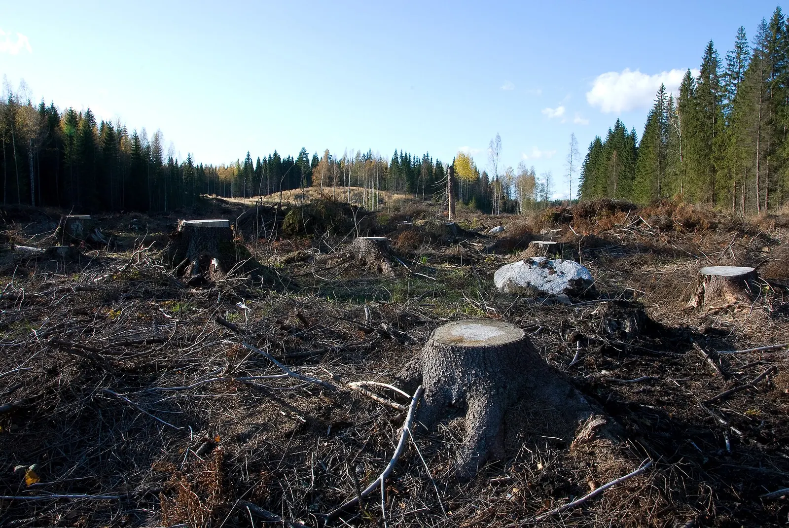
A clear-cut in southern Finland.Photo: Tero Laakso, Wikimedia Commons (CC BY 2.0)
5.2
Habitat fragmentation
Cause
Roads, pipelines, trails and especially seismic lines, narrow corridors cleared to survey for oil and gas.53
Environmental mechanism
Seismic lines were historically up to 10 m wide; newer lines are narrower (1.75–3 m) but far more numerous. Vegetation recovers slowly on them, leaving a lasting web of cuts through the forest.53
Organisms & processes affected
Linear features give predators easier access into caribou habitat, making caribou more vulnerable to predation.52
Ecological consequences
Fragmentation changes predator–prey relationships and edge habitat across huge areas, with significant consequences for threatened woodland caribou herds.53
Real-world example
Seismic-line density has increased drastically across oil- and gas-rich regions of Canada and the United States.53
5.3
Climate change
Cause
Greenhouse gases released by burning fossil fuels and clearing land trap more heat in the atmosphere.
Environmental mechanism
High latitudes are warming fastest: since 1979 the Arctic has warmed nearly four times faster than the planet as a whole.54 Warmer conditions shorten the snow season and lengthen summer drought.
Organisms & processes affected
Snowshoe hares whose color change is timed by day length face more days white on brown ground; snowpack duration is projected to fall by 29–35 days by mid-century in their range.38 Moose begin to show heat stress at about −5 °C in winter and 14 °C in summer.34
Ecological consequences
Species built for cold become mismatched with their environment, while fire and insect outbreaks become more likely (see 5.4 and 5.5).
Real-world example
In 2023, May–October temperatures across Canada averaged 2.2 °C warmer than the 1991–2020 normal, helping drive a record fire season.55
5.4
Changing wildfire patterns
Cause
Fire is natural in the boreal forest, but a warmer, drier climate, earlier snowmelt and drought are making fires more frequent and extensive; people also start fires.
Environmental mechanism
Earlier snowmelt and multi-year drought dry out fuels, so fires start sooner and spread farther.55 Black spruce forests are especially flammable.56
Organisms & processes affected
Fire usually kills black spruce, and very severe fires can destroy the seed stored in lodgepole pine cones.9,21 Burning releases carbon stored in trees and organic soil.
Ecological consequences
If fires return before conifers can mature and produce seed, forests can shift toward deciduous trees; in the past, severe fires favored less flammable deciduous vegetation.56
Real-world example
Charcoal in lake sediments from Alaska’s Yukon Flats shows that burning in recent decades exceeds the limits of the past 10,000 years.56 In 2023, about 15 million hectares burned in Canada (a national record) and more than 200 communities were evacuated.55
Smoke from the 2013 North Swift Fork Fire over boreal forest in Alaska.Photo: AlaskaNPS, Flickr (Public domain)
5.5
Insect outbreaks
Cause
Native insects such as the mountain pine beetle and spruce budworm periodically erupt; invasive insects such as the hemlock woolly adelgid arrive through human trade.20,23
Environmental mechanism
Beetles and adelgids feed on living tissue and sap; when populations explode across large areas of similar-aged, susceptible trees, whole stands die.
Organisms & processes affected
Lodgepole pine (mountain pine beetle), balsam fir (spruce budworm, its most serious damaging agent) and eastern hemlock (hemlock woolly adelgid).21,20,23
Ecological consequences
Mass tree death reduces timber supply and can speed the replacement of pine by other tree species.57,21
Real-world example
British Columbia’s mountain pine beetle epidemic had killed 53% of the province’s merchantable pine by 2012; in the worst year, 2004, beetles killed 140 million cubic meters of timber.57 In the eastern United States, the spread of hemlock woolly adelgid has been linked to regional declines in hemlock.23
Pines killed by mountain pine beetle turn red, then gray, across whole hillsides.Photo: U.S. Geological Survey, Flickr (CC0 1.0)
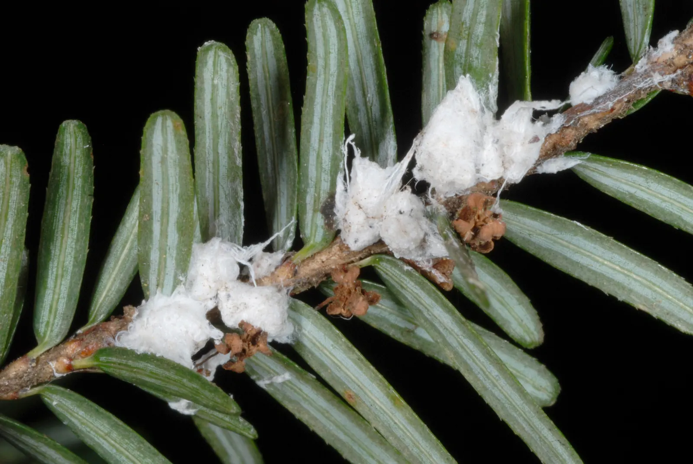
White, woolly egg sacs of hemlock woolly adelgid on an eastern hemlock twig, New York.Photo: Douglas Goldman, iNaturalist (CC BY-SA)
5.6
Mining and resource extraction
Cause
Demand for oil, minerals and energy. Alberta’s oil sands (part of the third-largest proven crude oil reserves in the world) lie within Canada’s boreal forest.58
Environmental mechanism
Surface mining removes all vegetation and topsoil to reach the oil sands; drilling (“in-situ”) projects disturb less land but still require wells, roads and seismic lines.58,53
Organisms & processes affected
Forest, peatland and soil communities are completely removed in mined areas; fragmentation affects wide-ranging species such as caribou.58,52
Ecological consequences
Restoring a self-sustaining boreal ecosystem on mined land is slow; reclamation of tailings ponds and most disturbed land “is just beginning, and will take many years.”58
Real-world example
Since 1967, oil sands mining has affected 895 km² of land, of which only 1.04 km² had been certified as reclaimed by regulators at the time of the federal report.58
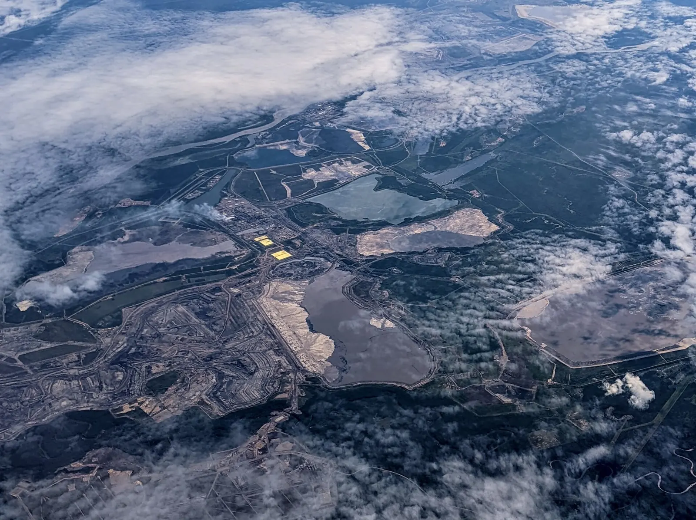
Syncrude's oil sands mine at Mildred Lake, Alberta.Photo: Dicklyon, Wikimedia Commons (CC BY-SA 4.0)
5.7
Biodiversity loss
Cause
The combined effect of habitat loss, fragmentation, climate change and changing disturbance patterns.
Environmental mechanism
When disturbance spreads across a landscape, species that need large areas of mature, undisturbed forest lose ground, while edge-adapted species and their predators move in.52
Organisms & processes affected
Woodland caribou are considered an indicator of boreal forest health.52 Cavity nesters like the boreal owl depend on old trees, and color-changing species like the snowshoe hare face camouflage mismatch.44,38
Ecological consequences
Losing caribou and other sensitive species simplifies the food web and signals wider ecosystem damage.
Real-world example
Boreal woodland caribou are listed as threatened under Canada’s federal Species at Risk Act.52
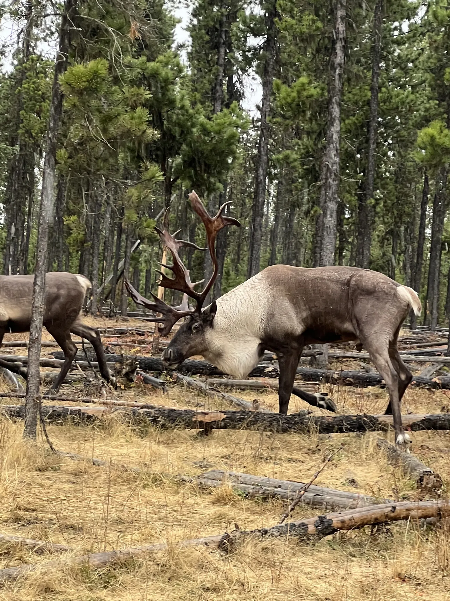
Woodland caribou in the interior forests of British Columbia.Photo: Aiva Noringseth, iNaturalist (CC BY)
6
Potential solutions
The most effective approaches copy natural processes (fire, regrowth, animal movement) rather than fighting them. Each solution lists the problems from section 5 that it addresses.
Harvest rates and methods are planned so the forest regrows and keeps its ecological functions. Many boreal harvesting practices now imitate natural disturbances such as fire and insect outbreaks, which help the forest renew itself.18 Independent, third-party certification checks that a forest company operates legally, sustainably and to world-recognized standards.59
Problem it addresses
Reduces the long-term damage of logging and protects habitat features that wildlife depend on.
Real-world example
As of 2021, 158 million hectares of Canada’s forests were certified by independent programs.59
Limits & trade-offs
Even well-managed harvests replace old forest with young forest, which does not suit every species; certification standards vary between programs.
Planting seedlings, or making sure harvested areas regenerate naturally, restores forest cover. Restoration can also target linear disturbances such as seismic lines, which otherwise recover slowly.18,53
Problem it addresses
Rebuilds forest after harvest and helps close fragmenting corridors.
Real-world example
In Canada, provincial laws require that all areas harvested on public land be replanted or allowed to regrow to set standards.18
Limits & trade-offs
Planted stands take decades to centuries to develop old-forest features such as large trees and woodpecker cavities.
Planting a conifer seedling.Photo: Region 5 Photography, Flickr (CC BY 2.0)
Parks, conservation areas and legally protected “critical habitat” keep large, connected areas free of industrial development, so species that need undisturbed forest can persist. Parks also serve as scientific baselines.18
Problem it addresses
Prevents habitat loss and fragmentation in the most important areas.
Real-world example
Wood Buffalo National Park protects almost 4.5 million hectares just north of the oil sands, and Alberta’s 2012–2022 Lower Athabasca Regional Plan committed to conserving more than 2 million hectares of habitat.58 For boreal caribou, critical habitat rules aim to keep at least 65% of each caribou range undisturbed.52
Limits & trade-offs
Protected areas cannot stop climate change or fire, and boundaries do not always match where animals move.
Fencing keeps large animals off highways, and overpasses and underpasses let them cross safely, reconnecting habitat that roads have split. Animals need to cross to find mates, food and shelter, and sometimes to escape predators.60
Problem it addresses
Reduces road deaths and reconnects fragmented populations.
Real-world example
Banff National Park has 44 wildlife crossing structures (six overpasses and 38 underpasses) and 82 km of fencing on the Trans-Canada Highway. Since they were built, wildlife–vehicle collisions have dropped by more than 80%. Wary species such as grizzly bears took up to five years to start using them.60
Limits & trade-offs
Crossings are expensive, and species differ: grizzlies, wolves, elk, moose and deer prefer high, wide, short structures, while black bears and cougars prefer long, low underpasses.60
A wildlife overpass on the Trans-Canada Highway in Banff National Park.Photo: ChrEugLee, Flickr (Public domain)
Companies must plan reclamation before a project begins, post financial security bonds, and return land to a self-sustaining ecosystem with local vegetation and wildlife after extraction ends.58 Lower-impact methods shrink the footprint: an in-situ (drilled) oil sands project disturbs only 10–15% of the land of a similar-sized mine, and newer seismic lines are much narrower than old ones.58,53
Problem it addresses
Limits the area destroyed by mining and restores it afterward.
Real-world example
The Government of Alberta requires oil sands companies to reclaim 100% of land after the resource is extracted; Syncrude’s Gateway Hill was the first area certified as reclaimed.58
Limits & trade-offs
Reclamation is slow: only about 1 km² of 895 km² disturbed had been certified reclaimed at the time of the federal report.58 Narrow seismic lines are built in much greater density, so their total impact may still be large.53
Prescribed fire is the controlled application of fire by experts under specified weather conditions. Burn plans set the temperature, humidity, wind, fuel moisture and smoke conditions under which a burn may proceed. The right fire at the right place and time reduces hazardous fuels, limits the spread of pest insects and disease, and recycles nutrients to the soil.50
Problem it addresses
Reduces the risk of extreme, uncontrolled wildfires near communities and restores the natural role of fire.
Real-world example
The U.S. Forest Service manages prescribed fires (and even some wildfires) to benefit natural resources and reduce future risk, summarizing the principle as “more prescribed fires mean fewer extreme wildfires.”50 The photo shows a prescribed burn in Canada’s Banff National Park.
Limits & trade-offs
Safe burning windows are short, smoke affects air quality, and prescribed fire cannot offset a climate that is making whole regions drier.
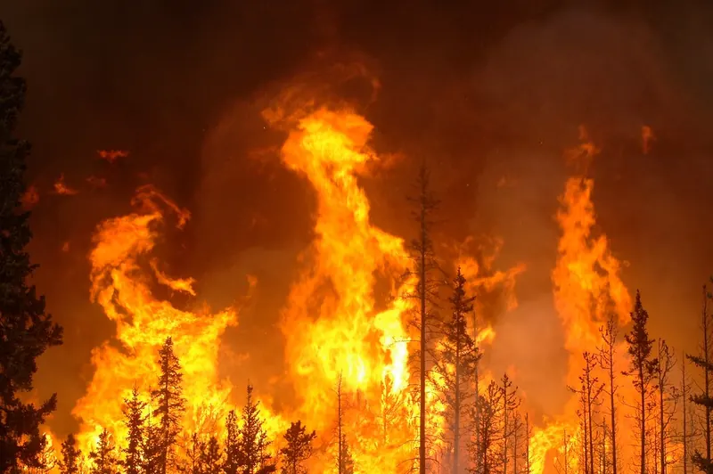
A prescribed burn in Banff National Park, 2009.Photo: Eggs&Beer, Flickr (CC BY 2.0)
Forest managers plant seedlings whose genetics match the climate a site will have during the trees’ lifetime, not only today’s, an approach called assisted migration. Scientists match the climate of a seed source to the planting site and move seed to keep pace with climate change.61 Reducing greenhouse gas emissions addresses the root cause.
Problem it addresses
Helps planted forests stay healthy and productive as the climate warms.
Real-world example
British Columbia’s seed-transfer standards are designed to ensure that its planted forests are adapted to their climatic environment over time.61
Limits & trade-offs
Climate projections are uncertain, and assisted migration helps planted trees, not wild animals such as hares or caribou.
7
Pictures
Photographs appear throughout this page next to the ideas they illustrate. These add a few more views of the boreal world. Every image is used under a free license and credited.
Landscapes
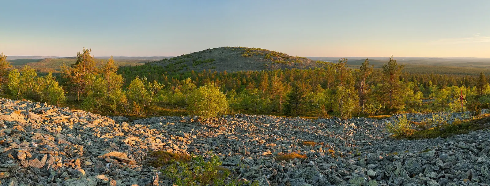
Boreal forest under the midnight sun, from Oratunturi fell in Finnish Lapland.Photo: Ximonic (Simo Räsänen), Wikimedia Commons (CC BY-SA 3.0)
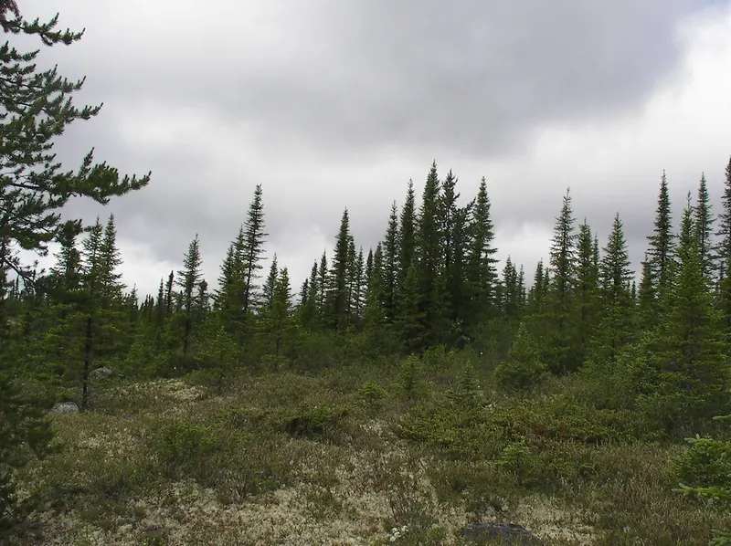
Open spruce taiga with a wet, mossy understory.Photo: peupleloup, Flickr (CC BY-SA 2.0)
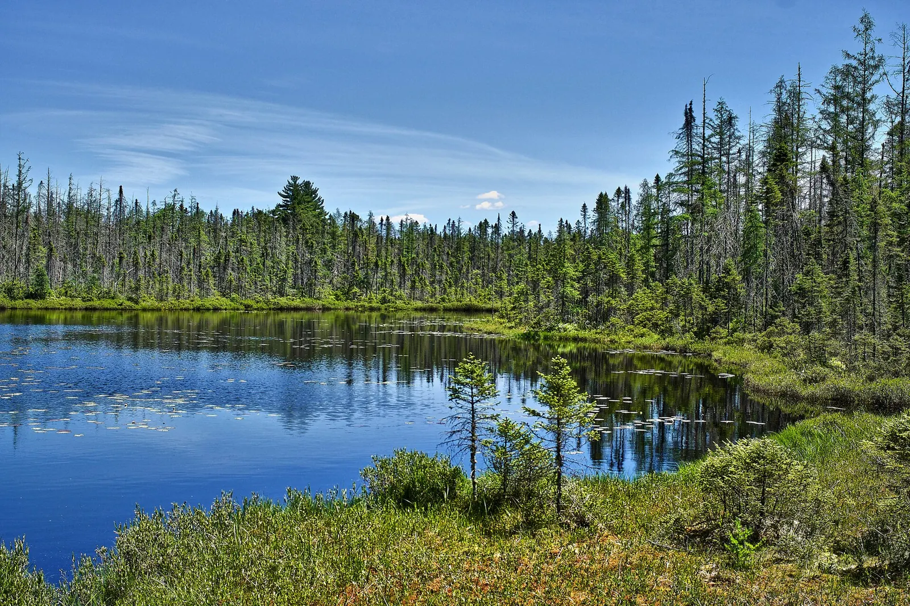
A boreal lake ringed by spruce. Lakes and bogs are scattered throughout the boreal landscape.Photo: Kerbla Edzerdla, Wikimedia Commons (CC BY 3.0)
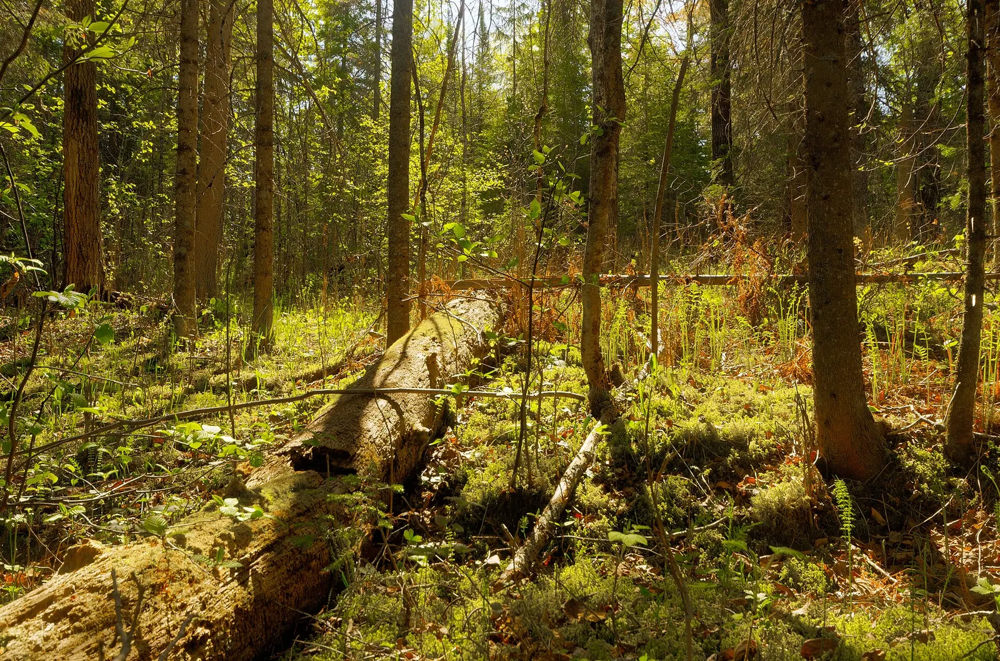
Inside the forest: conifers, fallen logs and a carpet of moss along the Brule River.Photo: Joshua Mayer from Madison, WI, USA, Wikimedia Commons (CC BY-SA 2.0)
Life in the forest
A brown bear stands to get a better view, Kamchatka, Russia.Photo: Валерия Ковалева, iNaturalist (CC BY)
A bull moose among conifers at Bloods Lake.Photo: stevemerkley, iNaturalist (CC BY)
8
Sources cited
Every numbered superscript on this page links here. Photographs are credited under each image and listed on the credits page.
Peel, M. C., Finlayson, B. L., & McMahon, T. A.(2007).Updated world map of the Köppen-Geiger climate classification.Hydrology and Earth System Sciences, 11(5), 1633–1644.https://doi.org/10.5194/hess-11-1633-2007
Strimbeck, G. R., Schaberg, P. G., Fossdal, C. G., Schröder, W. P., & Kjellsen, T. D.(2015).Extreme low temperature tolerance in woody plants.Frontiers in Plant Science, 6.https://doi.org/10.3389/fpls.2015.00884
Dinerstein, E., Olson, D., Joshi, A., et al.(2017).An ecoregion-based approach to protecting half the terrestrial realm.BioScience, 67(6), 534–545.https://doi.org/10.1093/biosci/bix014
Clemmensen, K. E., Bahr, A., Ovaskainen, O., et al.(2013).Roots and associated fungi drive long-term carbon sequestration in boreal forest.Science, 339(6127), 1615–1618.https://doi.org/10.1126/science.1231923
Fletcher, Q. E., Boutin, S., Lane, J. E., et al.(2010).The functional response of a hoarding seed predator to mast seeding.Ecology, 91(9), 2673–2683.https://doi.org/10.1890/09-1816.1
Trotter, R. T., III, Morin, R. S., Oswalt, S. N., & Liebhold, A. M.(2013).Changes in the regional abundance of hemlock associated with the invasion of hemlock woolly adelgid (Adelges tsugae Annand).Biological Invasions, 15(12), 2667–2679.USDA Forest Service Northern Research Station (Treesearch record).https://research.fs.usda.gov/treesearch/45316
Gower, S. T., & Richards, J. H.(1990).Larches: Deciduous conifers in an evergreen world.BioScience, 40(11), 818–826.https://doi.org/10.2307/1311484
Kloeppel, B. D., Gower, S. T., Vogel, J. G., & Reich, P. B.(2000).Leaf-level resource use for evergreen and deciduous conifers along a resource availability gradient.Functional Ecology, 14(3), 281–292.https://doi.org/10.1046/j.1365-2435.2000.00439.x
Stenvinkel, P., Fröbert, O., Anderstam, B., et al.(2013).Metabolic changes in summer active and anuric hibernating free-ranging brown bears (Ursus arctos).PLoS ONE, 8(9), e72934.https://doi.org/10.1371/journal.pone.0072934
Renecker, L. A., & Hudson, R. J.(1986).Seasonal energy expenditures and thermoregulatory responses of moose.Canadian Journal of Zoology, 64(2), 322–327.https://doi.org/10.1139/z86-052
Belovsky, G. E., & Jordan, P. A.(1981).Sodium dynamics and adaptations of a moose population.Journal of Mammalogy, 62(3), 613–621.https://doi.org/10.2307/1380408
Zimova, M., Hackländer, K., Good, J. M., Melo-Ferreira, J., Alves, P. C., & Mills, L. S.(2018).Function and underlying mechanisms of seasonal colour moulting in mammals and birds: What keeps them changing in a warming world?Biological Reviews, 93(3), 1478–1498.https://doi.org/10.1111/brv.12405
Mills, L. S., Zimova, M., Oyler, J., Running, S., Abatzoglou, J. T., & Lukacs, P. M.(2013).Camouflage mismatch in seasonal coat color due to decreased snow duration.Proceedings of the National Academy of Sciences, 110(18), 7360–7365.https://doi.org/10.1073/pnas.1222724110
Murray, D. L., & Boutin, S.(1991).The influence of snow on lynx and coyote movements: Does morphology affect behavior?Oecologia, 88(4), 463–469.https://doi.org/10.1007/BF00317707
Evans, A. L., Singh, N. J., Friebe, A., et al.(2016).Drivers of hibernation in the brown bear.Frontiers in Zoology, 13(1), 7.https://doi.org/10.1186/s12983-016-0140-6
Norberg, R. Å.(1978).Skull asymmetry, ear structure and function, and auditory localization in Tengmalm's owl, Aegolius funereus (Linné).Philosophical Transactions of the Royal Society of London. B, Biological Sciences, 282(991), 325–410.https://doi.org/10.1098/rstb.1978.0014
Boutin, S., Wauters, L. A., McAdam, A. G., et al.(2006).Anticipatory reproduction and population growth in seed predators.Science, 314(5807), 1928–1930.https://doi.org/10.1126/science.1135520
Hansen, M. C., Potapov, P. V., Moore, R., et al.(2013).High-resolution global maps of 21st-century forest cover change.Science, 342(6160), 850–853.https://doi.org/10.1126/science.1244693
Dabros, A., Pyper, M., & Castilla, G.(2018).Seismic lines in the boreal and arctic ecosystems of North America: Environmental impacts, challenges, and opportunities.Environmental Reviews, 26(2), 214–229.https://doi.org/10.1139/er-2017-0080
Rantanen, M., Karpechko, A. Y., Lipponen, A., et al.(2022).The Arctic has warmed nearly four times faster than the globe since 1979.Communications Earth & Environment, 3(1), 168.https://doi.org/10.1038/s43247-022-00498-3
Jain, P., Barber, Q. E., Taylor, S. W., et al.(2024).Drivers and impacts of the record-breaking 2023 wildfire season in Canada.Nature Communications, 15(1), 6764.https://doi.org/10.1038/s41467-024-51154-7
Kelly, R., Chipman, M. L., Higuera, P. E., Stefanova, I., Brubaker, L. B., & Hu, F. S.(2013).Recent burning of boreal forests exceeds fire regime limits of the past 10,000 years.Proceedings of the National Academy of Sciences, 110(32), 13055–13060.https://doi.org/10.1073/pnas.1305069110